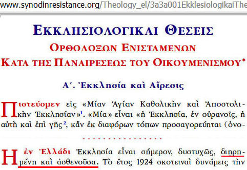
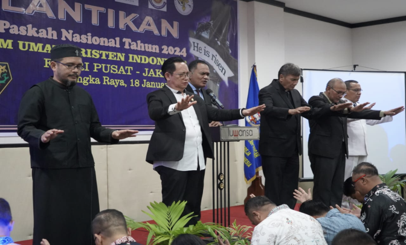
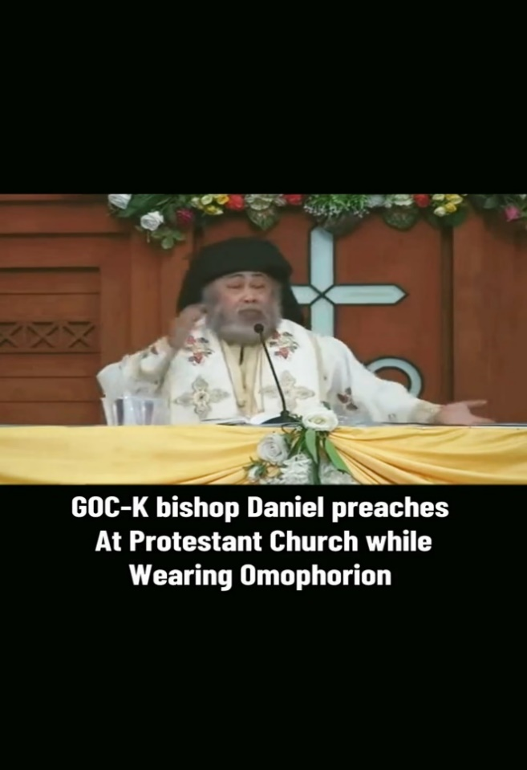
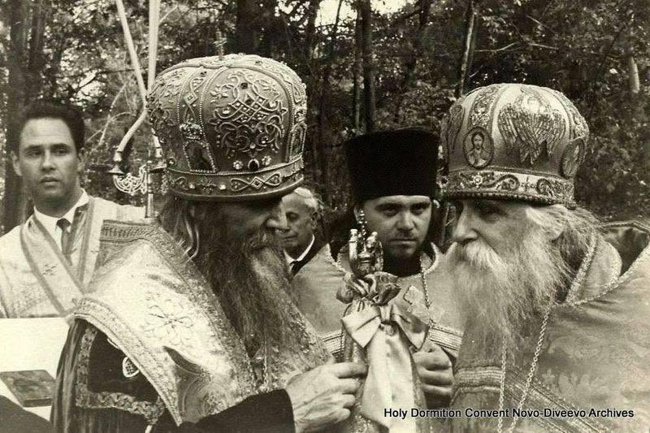

Εἰσαγωγικόν Κείμενον στό Κανονικόν Ὑπόμνημα τῆς συντακτικῆς ἐπιτροπῆς Θεολόγων, Νομικῶν καί Ἐπιστημόνων τοῦ Ἱεροῦ Ναοῦ τῶν Ἁγίων Πάντων Πατρῶν, γιά τήν ἐνημέρωσιν τῶν ἀπανταχοῦ Ὀρθοδόξων
Ἀποσχίστηκε ἡ ἐκκλησία ΓΟΧ Ἑλλάδος ἀπό τήν Καθολικήν Ὀρθόδοξον Ἐκκλησίαν, διδάσκοντας καί συνοδικά πλέον ἀλλότρια τῆς ἐκκλησιαστικῆς Παραδόσεως καί τῆς διδασκαλίας τῶν Πατέρων διδάγματα, ἀπό ὅ,τι πάντοτε, παντοῦ καί ὑπό πάντων ἐπιστεύθη, κριτήριον πού ἀποτελεῖ τό δόγμα τῆς Καθολικότητος καί τῆς Ἑνότητος τῆς Ὁμολογίας τῆς Πίστεως καί τῆς Ὀρθοδοξίας
«Αὐτὰ ποὺ κάνουν ὁ Ἀττικῆς καί ὁ Θεσσαλονίκης, οἱ ἐπίσημοι συνεορτασμοί, οἱ ἀνταλλαγὲς ἑορταστικῶν, διαβασμένων καὶ ἀπὸ τὶς δύο πλευρὲς βαΐων ἀπό Οἰκουμενιστές Νεοημερολογίτες καί ἀπό ἐπισκόπους τῆς ἐκκλησίας ΓΟΧ Ἑλλάδος στίς μεγάλες γιορτές ἐπί σειράν ἐτῶν, οἱ συμπροσευχές μετά τῶν Οἰκουμενιστῶν, ἡ συχνότατη μετάδοσις τῆς Θείας κοινωνίας ὑπό τῶν ἐπισκόπων καί τῶν ἱερέων τῆς ἐκκλησίας ΓΟΧ Ἑλλάδος στούς Νεοημερολογίτες, οἱ συνεχόμενοι συναγελασμοί καί οἱ συμφυρμοὶ μὲ τοὺς Νεοημερολογίτες, ἡ παραχώρησις τοῦ ἀναλογίου σέ Νεοημερολογίτες ψάλτες, οἱ ἄδειες ὁμιλίας μέσα σέ Ὀρθόδοξους Ναούς σέ Νεοημερολογίτες ἱερεῖς, αὐτά τὰ κάνουν, γιατί ἔχει κυριαρχήσει ἡ αἵρεσις τοῦ Κυπριανιτισμοῦ στὴν Ἐκκλησίαν Γ.Ο.Χ. Ἑλλάδος! Στό ἴδιο συμπέρασμα καταλήγει κάθε Ὀρθόδοξος, ὅταν βλέπει τούς Ἰνδονήσιους ἱερεῖς καί τόν ἐπίσκοπό τους κ. Δανιήλ Μπιαντόρο συνεχῶς νά συμπροσεύχονται μέ τό συνονθύλευμα τῶν Προτεσταντῶν ἐπί μίαν τριετίαν σχεδόν, καί μάλιστα μετά ἀμφίων! Ἡ μακροχρόνια αὐτή ἀνοχή εἶναι προδοσία τῆς Πίστεως καί ἀπηχεῖ τήν Κυπριανίτικη Οἰκουμενιστικήν καί αἱρετικήν ἱδεολογίαν».
«Ἐὰν, λοιπόν, ἐμεῖς τοὺς μνημονεύσουμε, ἤ παρευρεθοῦμε σέ ἐκκλησίαν πού μνημονεύονται αὐτοί ἀπό τούς ὁποίους ἀποτειχιστήκαμε, ἀφενός διασαλεύεται ἡ ἀποτείχισίς μας, ἀφετέρου μᾶς πιάνουν τὰ ἀναθέματα κατά τοῦ Οἰκουμενισμοῦ καί τοῦ Κυπριανιτισμοῦ! Τὰ πράγματα, κατὰ τὸν Ἅγιον Θεόδωρον τὸν Στουδίτην, δὲν τὰ βλέπουμε τοπικὰ καὶ ἀπομεμονωμένα ἐμεῖς, οἱ δοκοῦντες εἶναί τι, ἀλλὰ μὲ προοπτικὴν γιὰ τὸ μέλλον, ἀλλά καὶ τιμώντας τοὺς Πατέρες μας καί τήν Ἱερή Παράδοσίν μας! Διαφορετικά, στὸ Συνοδικὸν τῆς Ὀρθοδοξίας μας, ποὺ μόνον ἐμεῖς τὸ διαβάζουμε ὁλόκληρον τὴν Κυριακὴν τῆς Ὀρθοδοξίας, θὰ αὐτοαναθεματιζόμαστε συνεχῶς καὶ θὰ μᾶς ἀναθεματίζουν καὶ οἱ μελλοντικὲς γενεές! Ἐκεῖ ὅπου μνημονεύονται, λοιπόν, οἱ τῆς Ἐκκλησίας Γ.Ο.Χ. Ἑλλάδος, δὲν παρευρισκόμαστε, γιατί μετέχουμε τοῦ μολυσμοῦ καὶ μᾶς πιάνει γιὰ καλὰ τὸ ἀνάθεμα ὅλων τῶν ἀνὰ τὸν κόσμον μεγάλων Γνησίων Ὀρθοδόξων Συνόδων πού ἀναθεμάτισαν τίς κακοδοξίες τῆς ἐκκλησίας ΓΟΧ Ἑλλάδος! Εἶναι θέμα σεβασμοῦ τῆς Ὀρθοδοξίας τῶν Πατέρων μας καί ἀφορᾶ τήν σωτηρίαν μας! Δὲν εἶναι ἁπλῶς κάποιο διοικητικὸν θέμα ἢ θέμα παραβάσεων κάποιων διοικητικῶν Κανόνων! Ἐμεῖς οἱ δοκοῦντες εἶναί τι δίνουμε τὸ στίγμα καὶ ὁδηγοῦμε τοὺς ἁπλούστερους ἀδελφούς μας!»
«Πολλοί σημαντικοὶ ἀδελφοὶ, ἐπίσκοποι καί ἱερεῖς στὴν Ἑλλάδα καί στό ἐξωτερικόν ἀπεκήρυξαν τήν ἐκκλησίαν ΓΟΧ Ἑλλάδος ὡς Σεργιανιστικήν, Οὐνιτικήν καί ὡς ἁλλωμένην ἀπό τήν Κυπριανιτικήν αἱρετικήν ἰδεολογίαν! Ὅλοι αὐτοί πού τούς ἀπεκήρυξαν ἦσαν μέλη τῆς Ἐκκλησίας Γ.Ο.Χ. Ἑλλάδος! Ἐμεῖς ἀργήσαμε... Δυστυχῶς! Καὶ ὁ ἀρχιεπίσκοπος Καλλίνικος ὑπέγραψε καὶ δικαιολόγησε τὶς παραβάσεις τῶν δογματικῶν Κανόνων, καί ἔλαβαν τά κακῶς πραχθέντα συνοδικόν κῦρος μέ τήν ἀντιπατερικήν ἀπόφασίν τους! Διακήρυξαν, ὅτι τά ἀναφερόμενα καὶ πολλὰ ἄλλα, ὥν οὐκ ἔστιν ἀριθμός, εἶναι τάχα «κοινωνικὲς ἁβρότητες» καὶ «κοινωνικὸν πρωτόκολλον»!!! Αὐτὴ εἶναι ἡ αἵρεσις τοῦ Σχετικισμοῦ, ἡ σημαντικότερη ἐκδήλωσις τοῦ Οἰκουμενισμοῦ καί τοῦ Κυπριανιτισμοῦ (Ρελατιβισμοῦ)! Τὸν Κυπριανιτισμὸν τὸν κατεδίκασαν ὅλοι, οἱ Ρουμάνοι, οἱ Ρῶσοι καὶ ὅλες οἱ ἄλλες Σύνοδοι στὴν Ἑλλάδα, ὡς Οἰκουμενισμὸν καὶ Ρελατιβισμὸν ἢ Σχετικισμόν!
Τὶς καταδικαστικές ἀποφάσεις τῶν Ρουμάνων καὶ τῶν Ρώσων, καθὼς καὶ τὶς ἀποκηρύξεις τῆς ἐκκλησίας ΓΟΧ Ἑλλάδος ὑπό σημαντικῶν στελεχῶν τῆς Ὀρθοδοξίας στὴν Ἑλλάδα καὶ στὸ Ἅγιον Ὄρος, δημοσιεύουμε στήν συνέχειαν! Δὲν εἴμαστε στὸ Παλαιὸ μόνο γιὰ δεκατρεῖς ἡμέρες ἢ ἀπὸ κάποιον ῥομαντισμόν, ἀλλὰ ἀγωνιζόμαστε μὲ τὸ αἷμα τῆς καρδιᾶς μας γιὰ τὰ ἱερὰ καὶ τὰ ὅσια τῆς Ὀρθοδοξίας μας!»
Μέ ποιούς κοινωνοῦμεν Ὅ Ὅσιος Θεόδωρος ὁ Στουδίτης1, ἀναφερόμενος ad hoc στὸ ζήτημα τοῦτο, καθορίζει μὲ ἀπόλυτον πατερικὴν τεκμηρίωσιν, «κατὰ πάντας τοὺς Ἁγίους», τὰ γνωρίσματα τοῦ «ἀδιαβλήτου» καὶ «ἀκαταγνώστου» Κληρικοῦ, μὲ τὸν ὁποῖον ὀφείλουν οἱ ἀγωνιζόμενοι Ὀρθόδοξοι, ἐν καιρῷ αἱρετικῆς συγχύσεως, νὰ ἔχουν κοινωνίαν,
α. διότι, κατὰ τὸν Ὅσιον, ἡ αἵρεσις δὲν εἶναι τὸ μόνον κώλυμα πρὸς κοινωνίαν· ὑπάρχουν καὶ ἄλλα κωλύματα: εἶναι τὰ κανονικῆς φύσεως, ὡς καὶ τὰ «κατὰ τὸν βίον ὑποπτευόμενα καὶ ἠκουόμενα σφαλερά»·
β. διότι, τὰ κανονικὰ κωλύματα καὶ τὰ «προδήλως» «κατὰ βίον σφαλερά», «εἰ καὶ δεύτερα», ἐν σχέσει μὲ τὴν αἵρεσιν, «ἀλλ᾿ οὐκ ἔλαττα τοῖς εὐσεβῶς ἀναθεωροῦσιν», ἐφ᾿ ὅσον «θάτερον ὑπὸ θατέρου βάλλεται»·
γ. διότι, παραμένει ἐν ἰσχύει καὶ σήμερα ἡ τόσον ἐπίκαιρος πατερικὴ προτροπή: «Περιεργάζου, πολυπραγμόνει· οὐ γὰρ ἀκίνδυνος ἡ ἀνεξέταστος κοινωνία· περὶ γὰρ μεγάλων ὁ κίνδυνος» ( Ἱεροῦ Χρυσοστόμου)· «(ἄς) ἐκζητήσωμεν τοίνυν καὶ πολυπραγμονήσωμεν παρ᾿ οὗ ὀφείλομεν κοινωνῆσαι».
Ὁ Κυπριανιτισμός, δυστυχῶς, ἔχει κυριαρχήσει μέσα στήν ἐκκλησίαν ΓΟΧ Ἑλλάδος καί παντοῦ, στίς ἱερές Μονές, στίς Ἐνορίες καί στό ποίμνιον τῆς ἐκκλησίας ΓΟΧ καί ἀποτελεῖ πίστιν τῆς πλειοψηφίας τῶν ὀπαδῶν τῆς παρατάξεως πλέον αὐτῆς, τοῦ Κυπριανιτισμοῦ.
Οἱ τῆς Ἐκκλησίας ΓΟΧ Ἑλλάδος κοινωνοῦν ὅλους τούς Νεοημερολογίτες, τόσον οἱ "κανονικοί" λεγόμενοι ἐπίσκοποι, ὅσον καί σχεδόν ὅλοι οἱ ἱερεῖς τους, (ὑπάρχουν καί κάποιες ἐξαιρέσεις). Αὐτό καί μόνον ἀρκεῖ, γιά τήν διακοπήν τῆς κοινωνίας μας πρός αὐτούς καί γιά τήν ἀποκήρυξίν τους ὡς Ὀρθοδόξων.
Συνοδικά καί ἐπίσημα, ὡστόσον, ἐπικύρωσαν οἱ ἐπίσκοποι τῆς ἐκκλησίας ΓΟΧ Ἑλλάδος τίς Οἰκουμενιστικές διακηρύξεις καί τίς ἀπαράδεκτες ἐνέργειες τοῦ Ἀττικῆς κ. Μανιώτη καί τοῦ ἐξαδέλφου του, Θεσσαλονίκης κ. Μαρκόπουλου.
Τό σημαντικότερον πού πρέπει νά ληφθεῖ ἰδιαιτέρως ὑπ’ ὄψιν εἶναι τό Μέγα Συνοδικόν ἀνάθεμα τῶν Ρουμάνων ἐπισκόπων ἐναντίον τῆς ἐκκλησίας ΓΟΧ Ἑλλάδος ὑπό τόν κ. κ. Καλλίνικον Σαραντόπουλον. Αὐτό ἦταν τό ση-μαντικότερον καί τό ἀποφασιστικότερον γεγονός, πού μᾶς ὁδήγησεν στήν τελικήν διακοπήν τῆς κοινωνίας μας μέ τήν ἐκκλησίαν ΓΟΧ Ἑλλάδος ὑπό τόν κ. κ. Καλλίνικον.
Τό γεγονός αὐτό ὀφείλει νά ἀξιολογηθεῖ καταλλήλως ἀπό ὅλους τούς Γνησίους Ὀρθοδόξους καί νά λάβουν ὁριστικές καί ἀμετάκλητες ἀποφάσεις, γιά τήν τελεσίδικη διακοπήν τῆς κοινωνίας τους μέ τήν παράταξιν πλέον τήν ἐπονομαζόμενην ἐκκλησία ΓΟΧ Ἑλλάδος.
Εἶναι ἡ μεγαλύτερη Ὀρθόδοξη σύνοδος στόν κόσμον ἡ Ρουμανική Σύνοδος! Κανονικότατη Σύνοδος εἶναι ἡ νῦν Ρουμανική ὑπό τόν κ. κ. Εὐλόγιον καί ἦταν σέ πλήρη κοινωνίαν μέ τήν ἐκκλησίαν ΓΟΧ Ἑλλάδος τοῦ κ. κ. Καλλινίκου, ὅταν διέκοψαν τήν κοινωνίαν ἐπί ἀειμνήστου Μητροπολίτου κυροῦ Δημοσθένους μέ τόν ἀρχιεπίσκοπον κ. κ. Καλλίνικον καί τούς ὑπ’ αὐτόν. Στήν συνέχειαν ἀναθεμάτισαν ξεκάθαρα τίς αἱρετικές δοξασίες τῆς ἐκκλησίας ΓΟΧ Ἑλλάδος μέ ἀπόφασίν τους οἱ ὑπό τήν ἡγεσίαν τοῦ Μητροπολίτου Εὐλογίου ἐπίσκοποι τῆς Ρουμανικῆς Ἐκκλησίας!
- α. Δέν εἶναι, ὅμως, μόνον ἡ Ρουμανική Σύνοδος πού ἀπεκήρυξεν καί ἀνα-θεμάτισεν τήν ὑπό τόν κ. κ. Καλλίνικον Σαραντόπουλον σύνοδον τῆς ἐκκλησίας ΓΟΧ Ἑλλάδος, ἀλλά ὑπάρχουν καί πολλές ἄλλες καταδίκες ἀκόμη, ὅπως
- β. ἡ καταδίκη ἀπό τήν Γνήσια Ὀρθόδοξη Ρωσσικήν Σύνοδον τοῦ Ἀρχιεπι-σκόπου Τύχωνος, πού συνοδικά πρώτη τούς ἀπεκήρυξε, τούς κατεδίκασε καί τούς ἀναθεμάτισε,
- γ. ἀλλά καί ἡ μεγαλύτερη Γνήσια Ὀρθόδοξη Ρωσσική Σύνοδος στόν κόσμον ὑπό τόν Μητροπολίτην Θεόδωρον τοῦ Σούζνταλ
- δ. καί ὁ Ρῶσσος Ἀρχιεπίσκοπος Στέφανος μέ τήν Σύνοδόν του!
Ὅλοι αὐτοί κατεδίκασαν καί ἀναθεμάτισαν τόν Κυπριανιτισμόν καί τήν ἕνωσιν τῶν Κυπριανιτῶν μέ τόν ἀρχιεπίσκοπον κ. κ. Καλλίνικον καί ἑπο-μένως κατεδίκασαν τήν Κυπριανιτικήν αἱρετικήν ἰδεολογίαν, πού ἐπικρατεῖ σήμερα σέ ὅλον τόν χῶρον τῆς παρατάξεως τῆς ἐκκλησίας ΓΟΧ Ἑλλάδος ὑπό τόν κ. κ. Καλλίνικον! Ἡ βασικότερη ἀποδειξις τῆς κυριαρχούσης αἱρέσεως τοῦ Κυπριανιτισμοῦ στήν ἐκκλησίαν ΓΟΧ Ἑλλάδος εἶναι τό ὅτι ὅλοι σχεδόν οἱ ἱερεῖς καί οἱ ἀρχιερεῖς τῆς συνόδου αὐτῆς κοινωνοῦν ὅλους τούς Νεοημερολογίτες πιστούς. Καί γιά τόν λόγον αὐτόν ἀναθεματίζονται ἀπό τήν Ρουμανικήν Σύνοδον τοῦ Μητροπολίτου Εὐλογίου καί τούς κατέγνωσαν ὡς Οἰκουμενιστές καί ὅλοι οἱ γνήσιοι Ὀρθόδοξοι ἐπίσκοποι σέ ὅλον τόν κόσμον.
Ἄρα προηγήθηκεν ἡ Συνοδική καταδίκη τους ἀπό πολλές Συνόδους Γνησίων Ὀρθοδόξων ἀνά τόν κόσμον, (Ρουμάνων καί Ρώσσων), καί μετά ἐμεῖς, ἀφοῦ ἐξαντλήσαμε κάθε οἰκονομίαν, τούς ἀπεκηρύξαμε τελειωτικά καί ἀμετάκλητα. Ἡ διακοπή τῆς κοινωνίας μας πρός τήν σύνοδον τῆς ἐκκλησίας ΓΟΧ Ἑλλάδος εἶναι τελεσίδικη καί ἀμετάκλητη. Δέν γίναμε ὑπερσύνοδος, ἀλλά ἁπλῶς ἀκολουθήσαμε τίς συνόδους καί τό πλῆθος τῶν ἐπισκόπων καί τῶν σημαντικῶν Ὀρθοδόξων ἀδελφῶν πού τούς ἀπεκήρυξαν καί τούς ἀναθεμάτισαν!
Ἀκολουθήσαμε τήν στάσιν ταῆς μεγάλύτερης Κανονικής Συνόδου στόν κόσμον, (ἔχει καί τούς περισσότερους πιστούς), τήν Ρουμανικήν καί τήν στάσιν πολλῶν ἄλλων Ὀρθοδόξων Συνόδων, ὅπως τοῦ Μητροπολίτου Θεοδώρου τοῦ Σούζνταλ, τοῦ Ἀρχιεπισκόπου Τύχωνος, τοῦ Ἀρχιεπισκόπου Στεφάνου καί πολλῶν ἄλλων Ἀρχιεπισκόπων καί ἐπισκόπων Ἑλλήνων καί Ρώσσων, πού τούς ἀπεκήρυξαν καί τούς κατεδίκασαν, διακόπτοντας τήν κοινωνίαν μαζί τους. Σημαντικές, ἐπίσης, προσωπικότητες, πού ἀνῆκαν στόν χῶρον τῆς ἐκκλησίας ΓΟΧ Ἑλλάδος τούς ἀπεκήρυξαν ἐπίσης, ὅπως θά δοῦμε στήν συνέχειαν!
Ἀποδεινύονται σήμερα, (τήν τελευταίαν δεκαετίαν), οἱ τῆς ἐκκλησίας ΓΟΧ Ἑλλάδος ὑπό τόν ἀρχιεπίσκοπον κ. κ. Καλλίνικον, ὅτι εἶναι παρακολούθημα τῶν Νεοημερολογιτῶν.
Δυστυχῶς, αὐτό εἶναι ἐπιβεβαιωμένον ἀπό πολλές πλευρές:
Ποτέ δέν πίστεψαν αὐτά πού συμφωνήσαμε τό 2014.
Εἶναι σάν τούς χαμαιλέοντες!
Ἀλλάζουν χρῶμα, ἀνάλογα μέ τό περιβάλλον, ἀλλοῦ παρουσιάζονται μέ προσωπεῖον γνησίων Ὀρθοδόξων καί ἀλλοῦ μέ κυπριανιτικήν ἰδεολογίαν…
Ἄς ἐνσκήψουμε καί πάλιν, στό τί διακηρύσσουν συνοδικά οἱ πατριάρχες τῆς Ἀνατολῆς μετά τῶν Συνόδων τους (1848), γιά τό ποιός εἶναι ἐκεῖνος πού κρίνει καί πατριάρχες καί ἐπισκόπους καί συνόδους. Τρέμουν οἱ τῆς ἐκκλησίας ΓΟΧ Ἑλλάδος τήν διακήρυξιν τῶν Πατριαρχῶν τῆς Πανορ-θοδόξου Συνόδου τοῦ 1848: Φύλαξ καί ὑπερασπιστής τῆς Ὀρθοδοξίας εἶναι αὐτός ὁ λαός τοῦ Θεοῦ, τό Βασίλειον ἱεράτευμα, τό ἔθνος τό Ἅγιον!
Ἐφαρμόσαμε, λοιπόν, καί ἐμεῖς τό «Αἱρετικὸν ἄνθρωπον μετὰ μίαν καὶ δευτέραν νουθεσίαν παραιτοῦ, εἰδὼς ὅτι ἐξέστραπται ὁ τοιοῦτος καὶ ἁμαρ-τάνει ὢν αὐτοκατάκριτος» (Τίτ. γ΄ 10–11) Ὁ Μέγας Ἀπόστολος Παῦλος παραγγέλλει στὸν μαθητήν του Τίτον, νὰ νουθετεῖ τὸν αἱρετικὸν ἄνθρωπον, ἀλλὰ ἐὰν ἐκεῖνος ἐπιμένει στὴν πλάνην του, ὅπως ὁ Ἀττικῆς κ. Μανιώτης, μετὰ τὴν πρώτην καὶ τήν δευτέραν νουθεσίαν, κάθε γνήσιος Ὀρθόδοξος νὰ ἀποφεύγει τὴν περαιτέρω συναναστροφὴν μαζί του καί μέ τούς κοινωνοῦντας μέ αὐτόν. Ἡ λέξις «παραιτοῦ» σημαίνει «ἀπόφευγε», «ἀπομακρύνου», «μὴν ἀπο-δέχεσαι». Ἡ λέξις «αὐτοκατάκριτος» δηλώνει, ὅτι ὁ ἄνθρωπος αὐτός, ἐπι-μένοντας συνειδητὰ στὴν πλάνην του, ὅπως ὁ Ἀττικῆς κ. Μανιώτης καί ὁ συνεργός του ἐξάδελφός του, Θεσσαλονίκης κ. Μαρκόπουλος, καθίσταται μόνος του ὑπεύθυνος γιὰ τὴν καταδίκην του, εἶναι αὐτοκαταδικασμένος. Αὐτό διαπιστώσαμε καί ἐμεῖς μέ βάσιν τήν Ἱεράν παράδοσιν τῆς Ἐκκλησίας μας καί τίς ἀποφάσεις τῶν Οἰκουμενικῶν καί Πανορθοδόξων Συνόδων, ἀλλά καί τό Ἑνωσιακόν Κείμενον τοῦ 2014 καί διακόψαμε τήν κοινωνίαν τῶν τοιούτων καί τῶν κοινωνούντων μετ’ αὐτῶν.
Ρωσικὲς Παλαιοημερολογιτικὲς Γνήσιες Ὀρθόδοξοι Σύνοδοι ποὺ κατεδίκασαν τὶς ἐκκλησιολογικὲς ἀποκλίσεις τῆς Συνόδου τοῦ κ. κ. Καλλινίκου Σαραντόπουλου γιά τήν αἵρεσιν τοῦ Κυπριανιτισμοῦ πού κηρύσσεται στήν πράξιν ἀπό τήν Σύνοδόν του, τούς ἐπισκόπους του καί τούς ἱερεῖς τῆς Συνόδου του
Ἀπὸ τὴν ἐνδελεχῆ ἔρευναν προκύπτει, ὅτι ἡ Ρωσικὴ Γνησία Ὀρθόδοξος Ἐκκλησία (Russian True Orthodox Church – RTOC) ἔχει προβεῖ σὲ ρητὴν συνοδικὴν καταδίκην τῆς ἑνώσεως τῆς Συνόδου τοῦ Ἀρχιεπισκόπου Καλλινίκου Σαραντοπούλου μὲ τὴν Σύνοδον τῶν Ἐνιστα-μένων (Κυπριανιτῶν), τὸ 2014.
Ἡ καταδίκη αὐτὴ ἔχει ἰδιαίτερη θεολογικὴν καὶ κανονικὴν σημασίαν, διότι ἀφορᾷ ὄχι ἁπλῶς διοικητικὲς διαφορές, ἀλλὰ τὸ ζήτημα τῆς ἐκκλησιολογίας τοῦ Κυπριανιτισμοῦ, τῆς ἀποδοχῆς προηγουμένως καταδικασμένων διδασκαλιῶν καὶ τῆς ἑνώσεως χωρὶς προη-γούμενη μετάνοιαν.
1. Ἡ Ρωσικὴ Γνησία Ὀρθόδοξος Ἐκκλησία (RTOC)
Συνοδικὴ ἀπόφασις δημοσιευθεῖσα τὴν 12η Δεκεμβρίου 2014.
Ἡ Σύνοδος τῶν Ἐπισκόπων τῆς RTOC ἐξέτασε τὴν ἕνωσιν τῆς Ἐκκλησίας Γ.Ο.Χ. Ἑλλάδος ὑπὸ τὸν Ἀρχιεπίσκοπον κ. κ. Καλλίνικον μὲ τοὺς Κυπριανίτες καί στὴν ἀπόφασίν της:
Ἐπικαλεῖται τὸ Ἀνάθεμα τοῦ 1983 κατὰ τοῦ Οἰκουμενισμοῦ, τὸ ὁποῖον ἐξέδωσεν ἡ Ρωσικὴ Ἐκκλησία τῆς Διασπορᾶς (ROCOR).
Χαρακτηρίζει τὴν ἐκκλησιολογίαν τῆς Συνόδου τῶν Ἐνισταμένων συγκεκαλυμμένον Οἰκουμενισμόν.
Ἐπισημαίνει, ὅτι δὲν διαπιστώνεται μετάνοια τῶν Κυπριανιτῶν οὔτε ἀποκήρυξις τῶν προηγουμένων ἐκκλησιολογικῶν τους θέσεων.
Ἀναγνωρίζει τὴν σημασίαν τῶν προηγουμένων καταδικαστικῶν ἀποφάσεων τῆς ἑλληνικῆς Συνόδου ὑπό τόν ἀείμνηστον Ἀρχιεπίσκοπον κυρόν Χρυσόστομον κατὰ τῶν Κυπριανιτῶν.
Θεωρεῖ τὴν ἕνωσιν ὡς σοβαρὸν ἐκκλησιολογικὸν σφάλμα καὶ ὡς ἕνωσιν μὲ σχισματικοὺς καὶ κρυπτοοικουμενιστές.
Ἡ ἀπόφασις καταλήγει στὴν ἐκτίμησιν, ὅτι ἡ ἕνωσις ἀποτελεῖ πτῶσιν τῆς ἑλληνικῆς Συνόδου σὲ κοινωνίαν μὲ σχισματικοὺς καὶ κρυπτοοικουμενιστές. Πηγή: RTOC Synod Officially Condemns GOC-K Union (12.12.2014)
2. Νεώτερη ἐπίσημη δήλωσις τῆς ἴδιας Ρωσικῆς Συνόδου - 26 Σεπτεμβρίου 2015
Ἡ Γραμματεία τῆς RTOC, διὰ τοῦ πρωτοπρεσβυτέρου Βίκτωρος Μελέχωφ, ἐπανῆλθεν στὸ ζήτημα. Στὴν δήλωσιν ἀναφέρεται ρητῶς ἡ Σύνοδος ὑπὸ τὸ ὠμοφόριον τοῦ Ἀρχιεπισκόπου κ. Καλλινίκου, καὶ ἐπισημαίνονται τὰ σοβαρὰ κανονικὰ καὶ ἐκκλησιο-λογικὰ σφάλματα τὰ ὁποῖα διεπράχθησαν μὲ τὴν ἕνωσιν τοῦ Μαρτίου τοῦ 2014. Ἡ ρωσικὴ πλευρὰ θεωρεῖ, ὅτι ἡ ἑλληνικὴ Ἱεραρχία ἀπομακρύνθηκε ἀπὸ τὴν προηγούμενη ὁμολογίαν της, ἀφοῦ ἑνώθηκε μὲ τὴ Σύνοδον τῶν Ἐνισταμένων, χωρὶς νὰ ἀπαιτήσει ἀποκήρυξιν τῶν ἐκκλησιολογικῶν της διδασκαλιῶν. Πρόκειται γιὰ ἐπίσημη ἐπιβεβαίωσιν τῆς προηγουμένης καταδικαστικῆς θέσεως. Πηγή: RTOC Chancellery - Δήλωσις 26.09.2015
3. Ἡ Ρωσικὴ Ὀρθόδοξος Αὐτόνομος Ἐκκλησία τοῦ Μητροπολίτου Θεοδώρου τοῦ Σούζνταλ (ROAC)
Συνοδικὴ καταδίκη τῆς 17ης Φεβρουαρίου 2007 - δημοσιευμένα Πρακτικὰ τῆς Συνόδου τό 2008.
Ἡ Ρωσικὴ Ὀρθόδοξος Αὐτόνομος Ἐκκλησία (Russian Orthodox Autonomous Church – (ROAC) τοῦ Θεοδώρου Μητροπολίτου τοῦ Σούζνταλ ἀποτελεῖ διαφορετικὴν ἐκκλησι-αστικὴν δικαιοδοσίαν ἀπὸ τὴν RTOC. Ἡ Σύνοδός της κατεδίκασε τὴν ἐκκλησιολογίαν τοῦ Μητροπολίτου Κυπριανοῦ Ὠρωποῦ καὶ Φυλῆς, χαρακτηρίζοντάς την ὡς διδασκαλίαν ποὺ εἰσάγει συγκεκαλυμμένως τὴν αἵρεσιν τοῦ Οἰκουμενισμοῦ. Ἡ συνοδικὴ ἀπόφασις διακηρύσσει, ὅτι ὅσοι ἀποδέχονται τὴν συγκεκριμένην διδασκαλίαν ὑπάγονται στὸ Ἀνάθεμα τῆς ROCOR τοῦ 1983. sinod.ruschurchabroad.org+1 Πρωτογενὲς τεκμήριον: Πρακτικὰ τῆς Συνόδου τῆς ROAC τοῦ 2008 Ἡ ἀπόφασις αὐτή ἔχει πολύ μεγάλην σημασίαν γιὰ τὴν ἕνωσιν τοῦ 2014.
4. Ἡ Ρωσικὴ Ἐκκλησία τῆς Διασπορᾶς (ROCOR) καὶ τὸ Ἀνάθεμα τοῦ 1983
Ἡ Σύνοδος τῆς ROCOR ὑπό τόν Ἅγιον Φιλάρετον ἐξέδωσε τὸ 1983 τὸ γνωστὸν Ἀνάθεμα κατὰ τοῦ Οἰκουμενισμοῦ. Τὸ Ἀνάθεμα αὐτὸ ἀποτελεῖ βασικὸν δογματικὸν τεκμήριον, στὸ ὁποῖον ἀναφέρονται οἱ μεταγενέστερες ρωσικὲς καταδικαστικὲς ἀποφάσεις περὶ Κυπρια-νιτισμοῦ καί καταδικάζει καί τήν Σύνοδον τοῦ ἀρχιεπισκόπου κ. κ. Καλλινίκου καί τούς ἐπισκόπους καί ἱερεῖς, πού κηρύσσουν οἰκουμενιστικά μέ λόγια καί μέ ἔργα, -(τά ἀνοίγματα πρός τούς Οἰκουμενιστές καί τούς Νεοημερολογίτες)-, τήν αἵρεσιν τοῦ Κυπριανιτισμοῦ.
5. Μεταγενέστερη, δεύτερη συνοδικὴ καταδίκη τοῦ Κυπριανιτισμοῦ ἀπὸ τὴν RTOC
Στό ἰδιαίτερον συνοδικὸν κείμενον τῆς RTOC, δημοσιευμένον τὸ 2017, μὲ τίτλον:
Determination of the Sobor of Bishops of RTOC Concerning Dogmatic Questions Regarding the Sacraments of World Ecumenical Orthodoxy, the Ecclesiological Heresy of “Cyprianism” and the Anathematizing of the Heresy of “Sergianism”
καταδικάζεται ἡ ἐκκλησιολογική αἵρεσις τοῦ Κυπριανιτισμοῦ καί ἀναθεματίζεται ἡ αἵρεσις τοῦ Σεργιανισμοῦ. Ἡ Σύνοδος ἐπαναβεβαιώνει, ὅτι ὁ Κυπριανιτισμὸς συνιστᾷ ἐκκλησιολογικὴν αἵρεσιν, ἡ ὁποία ἐμπίπτει στὸ Ἀνάθεμα τοῦ 1983. Πηγή: Συνοδικὸν κείμενον τῆς RTOC περὶ Κυπριανιτισμοῦ
Συγκεντρωτικὸς πίνακας
| Ρωσικὴ Σύνοδος | Χρονολογία | Περιεχόμενον |
|---|---|---|
| ROCOR | 1983 | Ἀνάθεμα κατὰ τοῦ Οἰκουμενισμοῦ γενικῶς |
| ROAC | 2007–2008 | Καταδίκη τῆς ἐκκλησιολογίας Κυπριανοῦ |
| RTOC | 2014 | Ρητὴ καταδίκη τῆς ἑνώσεως τῆς Συνόδου Καλλινίκου μὲ τοὺς Κυπριανίτες |
| RTOC | 2015 | Ἐπίσημη ἐπιβεβαίωση τῶν καταλογιζομένων σφαλμάτων |
| RTOC | 2017 (δημοσίευση) | Ἐπαναβεβαίωση τῆς καταδίκης τοῦ Κυπριανιτισμοῦ |
Κανονικὸν συμπέρασμα
Ἀπὸ τὰ ἀνωτέρω προκύπτει, ὅτι δύο διακριτὲς ρωσικὲς παλαιοημερολογιτικὲς ἐκκλησιαστικὲς δικαιοδοσίες, ἡ ROAC καὶ ἡ RTOC, ἔχουν καταδικάσει συνοδικῶς τὴν ἐκκλησιολογίαν τοῦ Κυπριανιτισμοῦ, ἐκτός τῆς καταδίκης τῆς Μεγάλης Ρουμανικῆς Συνόδου.
Ἐξ αὐτῶν, ἡ RTOC ἔχει καταδικάσει ρητῶς, ὅπως εἴδαμε, καὶ τὴν ἕνωσιν τῆς Συνόδου Καλλινίκου μὲ τοὺς Κυπριανίτες. Ἰδιαίτερη σημασίαν ἔχει καὶ ἡ ἐπίσημη μελέτη τοῦ πρωτοπρεσβυτέρου Βίκτωρος Μελέχωφ, ἡ ὁποία δημοσιεύεται στὴν ἱστοσελίδα τῆς RTOC καὶ ἐξετάζει διεξοδικῶς τὴν ἕνωσιν τοῦ 2014. Βίκτωρος Μελέχωφ - Κριτικὴ τῆς ἑνώσεως Γ.Ο.Χ. καὶ Κυπριανιτῶν Ὁ Βίκτωρ Μελέχωφ ἀνήκει στὴν Ρωσικὴν Γνησίαν Ὀρθόδοξον Ἐκκλησίαν (RTOC – ΡΙΠЦ), τῆς ὁποίας Πρωθιεράρχης εἶναι ὁ Ἀρχιεπίσκοπος Ὄμσκ καὶ Σιβηρίας Τύχων (Πασέτσνικ). Μάλιστα, ὑπάρχει μία σημαντικὴ νεώτερη ἐξέλιξη: Ὁ Βίκτωρ Μελέχωφ διετέλεσε Πρωτοπρεσβύτερος καὶ Γραμματεὺς τῆς Ἱερᾶς Συνόδου τοῦ Ἀρχιεπι-σκόπου Τύχωνος. Στὶς 14 Σεπτεμβρίου 2025 χειροτονήθηκε Ἐπίσκοπος Βοστώνης καὶ Ἀμερικῆς, ἀπὸ ἱεράρχες τῆς RTOC. Ἐξακολουθεῖ νὰ περιλαμβάνεται στὴν ἐπίσημη σύνθεσιν τῆς Συνόδου τοῦ Ἀρχιεπισκόπου Τύχωνος. Ἑπομένως, ὁ Βίκτωρ Μελέχωφ δὲν εἶναι ἁπλῶς ἕνας ἀνεξάρτητος θεολόγος ποὺ κατέκρινε τὴν Σύνοδον Καλλινίκου Σαραντοπούλου. Ἀνήκει στὴν ἴδια ρωσικὴν ἐκκλησιαστικὴν δικαιοδοσίαν, ποὺ ἐξέδωσε τὴν καταδικαστικὴν ἀπόφασιν γιὰ τὴν ἕνωσιν τοῦ 2014 μὲ τοὺς Κυπριανίτες. Ἰδιαίτερη σημασίαν ἔχει, ὅτι θεολογικὸν κείμενόν του τοῦ 2018 δημοσιεύθηκε μὲ τὴν εὐλογίαν τῆς Συνόδου τῆς RTOC.
Ἡ ἐπίσημη στάσις τῆς Μεγάλης Συνόδου τοῦ Μητροπολίτου Θεοδώρου, (διαδόχου τοῦ Μητροπολίτου κυροῦ Βαλεντίνου), τοῦ Σούζνταλ
1. Ἡ σημαντικότερη πρωτογενὴς πηγὴ εἶναι τὰ Πρακτικὰ τῆς Ἀρχιερατικῆς Συνόδου τῆς ROAC, 8–12 Φεβρουαρίου 2008, ἐπὶ Μητροπολίτου Βαλεντίνου, προκατόχου τοῦ Θεοδώρου τοῦ Σούζνταλ. Στὰ Πρακτικὰ αὐτὰ ἀναφέρεται ρητῶς, ὅτι ἡ ROAC εἶχε ἀποφασίσει νὰ μὴν κοινωνεῖ μὲ τὴν Σύνοδον τοῦ Μητροπολίτου Βιταλίου τῆς ROCOR, ἕως ὅτου ἐκείνη διακόψει τὴν κοινωνίαν μὲ τὴ Σύνοδον τῶν Ἐνισταμένων τοῦ Κυπριανοῦ Φυλῆς. Ἡ ROAC αἰτιολογοῦσε τὴν στάσιν της χαρακτηρίζοντας τὴν ἐκκλησιολογικὴν διδασκαλίαν τῶν Κυπριανιτῶν αἱρετικήν. (roacusa.org). Ἐπομένως, ἡ Ρωσικὴ Σύνοδος εἶχεν ἤδη διατυπώσει σαφῆ ἀντίθεσιν πρὸς τὸν Κυπριανιτισμόν, πολὺ πρὶν ἀπὸ τὴν ἕνωσιν τῶν Κυπριανιτῶν μὲ τὴν Σύνοδον Καλλινίκου. Πρωτογενὲς τεκμήριο: Ἐπίσημα Πρακτικὰ τῆς Συνόδου Σούζνταλ τοῦ 2008
2. Ἡ ἕνωσις τῆς 18ης Μαρτίου 2014
Στὶς 5/18 Μαρτίου 2014 ἡ Σύνοδος τοῦ Ἀρχιεπισκόπου Καλλινίκου ἀνακοίνωσε ἐπισήμως τὴν ἕνωσιν καὶ ἐνσωμάτωσιν τῆς Συνόδου τῶν Ἐνισταμένων στὴν Ἐκκλησίαν Γ.Ο.Χ. Ἑλλάδος. Ἡ ἕνωσις αὐτὴ δημιούργησε προφανὲς ζήτημα ὡς πρὸς τὴν σχέσιν τῶν δύο Συνόδων, ἐπειδὴ ἡ ROAC εἶχε προηγουμένως ἀπορρίψει τὴν ἐκκλησιολογίαν τῶν Κυπρι-ανιτῶν (Κυπριανιτισμόν).
3. Ἡ σημασία τῆς συνοδικῆς καταδίκης τοῦ Κυπριανιτισμοῦ
Στὰ Πρακτικὰ τοῦ 2008 περιλαμβάνεται εἰδικὴ εἰσήγησις τοῦ Ἐπισκόπου Ἀνδρέου Παβλόφσκογιε γιὰ τὴν διδασκαλίαν τοῦ Μητροπολίτου Κυπριανοῦ. Ἡ εἰσήγησις χαρα-κτηρίζει τὴν ἐκκλησιολογίαν τῆς Συνόδου τῶν Ἐνισταμένων ὡς συγκεκαλυμμένην μορφὴν τοῦ Οἰκουμενισμοῦ. Ἡ ἀπόφασις ἀποτελεῖ ἰδιαίτερα σημαντικὸν τεκμήριον γιὰ τὴν δογματικὴν θέσιν τῆς ROAC. (roacusa.org)
Ἡ Ἑλληνικὴ Παλαιοημερολογιτικὴ Σύνοδος ὑπὸ τὸν Ἀρχιεπίσκοπον Γρηγόριον
GOC Kallinikos - Κείμενο καταδίκης τῆς ἐκκλησιαστικῆς του πορείας Πρόκειται γιὰ ρητὴν καταδικαστικὴν τοποθέτησιν ἀπέναντι στήν σύνοδον τοῦ ἀρχιεπισκόπου κ. Καλλινίκου.
ΔΙΑΚΟΠΗ ΚΟΙΝΩΝΙΑΣ ΚΑΙ ΑΠΟΚΗΡΥΞΙΣ ΤΗΣ ΣΥΝΟΔΟΥ ΤΗΣ ΕΚΚΛΗΣΙΑΣ ΓΟΧ ΕΛΛΑΔΟΣ ΥΠΟ ΤΟΝ ΑΡΧΙΕΠΙΣΚΟΠΟΝ κ. κ. ΚΑΛΛΙΝΙΚΟΝ ΣΑΡΑΝΤΟΠΟΥΛΟΝ ΥΠΟ ΠΛΗΘΟΥΣ ΙΕΡΕΩΝ, ΙΕΡΩΝ ΜΟΝΩΝ, ΣΗΜΑΝΤΙΚΩΝ ΠΡΟΣΩΠΙΚΟΤΗΤΩΝ ΚΑΙ ΙΔΙΩΣ ΥΠΟ ΤΗΣ ΜΕΓΑΛΗΣ ΡΟΥΜΑΝΙΚΗΣ ΣΥΝΟΔΟΥ ΤΟΥ ΜΗΤΡΟΠΟΛΙΤΟΥ ΕΥΛΟΓΙΟΥ
Ἡ συγκεκριμένη διακοπὴ κοινωνίας καί ἡ ἀποτείχισίς μας δὲν εἶναι μεμονωμένον γεγονός, ἀλλὰ ἐντάσσεται σὲ μία εὐρύτερη σειράν διακοπῆς κοινωνίας καί ἀποκηρύξεως τῆς ἐκκλησίας ΓΟΧ Ἑλλάδος (ΝΠΙΔ), καί τῆς ἀρχιεπισκοπῆς ΓΟΧ Ἀθηνῶν τοῦ Ἀρχιεπισκόπου κ. κ. Καλλινίκου, ὑπό πολλῶν κληρικῶν, μοναχῶν, ἱερῶν μονῶν καὶ λαϊκῶν.
Μεταξὺ τῶν προσώπων καὶ τῶν Ἐκκλησιαστικῶν καί Μοναστικῶν κοινοτήτων, πού ἀπεκήρυξαν τήν Ἐκκλησίαν ΓΟΧ Ἑλλάδος ἐκτός ἀπό ἡμᾶς, ἀπό τό Ἐκκλησιαστικόν καί Διοικητικόν Συμβούλιον τοῦ Ἱεροῦ Ναοῦ τῶν Ἁγίων Πάντων, τήν Ἀδελφότητα τοῦ Ἁγίου Μάρκου τοῦ Εὐγενικοῦ καί τήν Ἕνωσιν Ὀρθοδόξων Ἐπιστημόνων, κατά τά παρουσιαζόμενα ἐκτενῶς στό συνταχθέν ἀπό τήν συντακτικήν Ἐπιτροπήν νομικῶν Θεολόγων καί Ἐπιστημόνων κείμενον, εἶναι:
Ὁ γνωστός παγκοσμίως συγγραφεύς καί ἱστορικός κ. Vladimir Moss, πρώην ὑπέρμαχος καί φίλος τῆς ὑπό τόν κ. κ. Καλλίνικον, ἐκκλησίας ΓΟΧ Ἑλλάδος, ὁ ὁποῖος κατηγορεῖ τήν ἐκκλησίαν ΓΟΧ Ἑλλάδος ὡς Σεργια-νιστικήν, ὑποταγμένην δηλαδή στό κράτος, μέσῳ τῆς ὑπαγωγῆς της στόν Νόμον περί Κοινοτήτων καὶ ὡς Οὐνιτικήν στόν χῶρον τῆς Ἐνστάσεως καί τῆς Ὁμολογίας, γιά τήν Οὐνιτικήν τακτικήν της, καί τήν ἀπεκήρυξεν καί διέκοψεν κάθε κοινωνίαν μέ αὐτήν.
- ὁ εὐσεβέστατος μακαριστός ἀσκητής Θεοφιλέστατος Ἐπίσκοπος Βρεσθένης κυρός Θεοδόσιος τῆς Ἐκκλησίας ΓΟΧ Ἑλλάδος,
- ἡ Ἱερὰ Μονὴ Ἁγίου Στεφάνου Βαθέος Αὐλίδος,
- ὁ εὐλαβέστατος π. Δημήτριος Μίγδος στόν Βόλον,
- ὁ ἐξαίρετος καί σεβάσμιος ἀρχιμανδρίτης π. Ἀγαθάγγελος, νῦν ἐπίσκοπος Σάμου,
- ὁ λόγιος μοναχὸς καί πολυγραφότατος ἐκδότης πλείστων μεγάλων ἐκκλησιαστικῶν ἔργων π. Ἑρμόλαος Ἐσφιγμενίτης,
- ὁ γνωστός γιά τούς ἀγῶνες του ὑπέρ τῆς Ὀρθοδοξίας ἀνά τό Πανελλήνιον χειρουργός Δρ. Ἀθανάσιος Παπαγεωργίου, πρώην διευθυντής τῆς Χειρουργικῆς Κλινικῆς τοῦ Ἀττικοῦ Νοσοκομείου στήν Ἀθῆνα,
- ὁ Μητροπολίτης Καλύμνου κ. Καλλίνικος, πρώην ἐπίσκοπος τῆς ἐκκλησίας ΓΟΧ Ἑλλάδος
- ὁ ἐκλεκτός πρώην Λυκειάρχης καί καθηγητής Μαθηματικῶν κ. Ἀθανάσιος Τελώνης,
- ὁ γνωστός ἀνά τό Πανελλήνιον Καθηγητής τοῦ Πανεπιστημίου Ἰωαννίνων κ. Δημήτριος Χατζηνικολάου,
- ὁ εὐσεβής π. Εὐστράτιος Τούμπαρης καί ἀρκετοί ἄλλοι Πρεσβύτεροι στόν Πειραιά, ὅπως καί ἀρκετοί κληρικοὶ τῆς Μητροπόλεως Θεσσαλονίκης ὑπό τόν Θεσσαλονίκης κ. Μαρκό-πουλον, καὶ
- ὅλοι οἱ ἐκλεκτοί ἀδελφοὶ τῆς Ἐνορίας τῶν Ἁγίων Ἀποστόλων στὴν Γερμανίαν μετά τοῦ Διοικητικοῦ τους καί Ἐκκλησιαστικοῦ Συμβουλίου.
Σέ διακοπήν τῆς κοινωνίας πρός τήν ἐκκλησίαν ΓΟΧ Ἑλλάδος προχώρησε καί τό μεγαλύτερο Μοναστήρι μας στό Ἅγιον Ὄρος, ἐκεῖνο τῆς Ἱερᾶς Μονῆς Ἐσφιγμένου καὶ ἀρκετοί ἄλλοι ἐκ τῶν Ζηλωτῶν Ἁγιορειτῶν Πατέρων.
Ἰδιαίτερη μνεία γίνεται στὴν μεγαλύτερη στόν κόσμον Ρουμανικὴν, Κανονικήν παλαιοημερολογιτικὴν Ἐκκλησίαν ὑπό τόν Μητροπολίτην κ. κ. Εὐλόγιον, πλήρως κοινωνικήν, κατά τόν χρόνον τῆς διακοπῆς τῆς κοινωνίας της πρός τήν ἐκκλησίαν ΓΟΧ Ἑλλάδος, ὑπό τόν Ἀρχιεπίσκοπον κ. κ. Καλλίνικον, ἡ ὁποία προέβη, ἐπίσης, σέ ἀποκήρυξιν τῆς ἐκκλησίας ΓΟΧ, κατηγορῶντας την διά αἵρεσιν κατά τά στό παρόν ὑπόμνημα ἐκτιθέμενα λεπτομερῶς, (ἀποφάσεις καί καταδίκες) !
Προχώρησε μάλιστα ἡ Ρουμανική Σύνοδος καί σέ ἀναθεματισμόν τῶν αἱρετικῶν θέσεων καί τῶν υἱοθετούντων αὐτές στήν πρᾶξιν ἐπισκόπων καί πρεσβυτέρων τῆς Ἐκκλησίας ΓΟΧ Ἑλλάδος.
Ἡ ἀκριβὴς ἔκτασις καὶ ἡ νομοκανονικὴ σημασία τῆς διακοπῆς κοινωνίας πρός τήν ἐκκλησίαν ΓΟΧ Ἑλλάδος προκύπτει ἀπὸ τὰ αὐθεντικὰ ρουμανικὰ ἐπίσημα συνοδικὰ κείμενα - Συνοδικές ἀποφάσεις τῆς ὑπό τόν μακαριστόν Μητροπολίτην κυρόν Δημοσθένην, καί σήμερον τῆς ὑπό τόν Μητροπολίτην κ. κ. Εὐλόγιον Συνόδου, μὲ βεβαίαν χρονολογίαν, ὑπογραφὲς καὶ πιστὴν μετάφρασιν, πού ἐπισυνάπτονται στά ἐπισυναπτόμενα τεκμήρια.
ΣΤ΄ Ἡ Ρουμανική ἀδελφή Ὀρθόδοξη Ἐκκλησία ἐπί λέξει ἀναθε-ματίζει τήν Ἐκκλησίαν ΓΟΧ Ἑλλάδος ὑπό τόν Ἀρχιεπίσκοπον κ. κ. Καλλίνικον καί διακόπτει κάθε κοινωνίαν μέ αὐτήν κατηγο-ρῶντας ἰδιαιτέρως δύο ἐπισκόπους της ὡς αἱρετικούς καί τήν ἰδί-αν ὡς αἱρετικήν:
ΕΝ ΚΑΤΑΚΛΕΙΔΙ, ΛΕΜΕ ΣΕ ΟΛΟΥΣ ΟΣΟΙ:
- Θεωρούν τους αιρετικούς ως μέρος, ή ότι θα μπορούσαν να είναι μέρος, της Εκκλησίας του Χριστού,
- Θεωρούν, ότι δεν θα μπορούσε κάθε ορθόδοξη σύνοδος να κρίνει, νά καταδικάσει και να αναθεματίσει άνευ όρων τους αιρετικούς…
- Θεωρούν, ότι η Εκκλησία του Χριστού δεν είναι άψογη και άμεμπτη, διδάσκοντας, ότι οι αιρετικοί είναι ή μπορούν να είναι μέλη της Εκκλησίας του Χριστού, επιτιθέμενοι έτσι στην αγιότητα της Εκκλησίας.
- Θεωρούν τις οικουμενιστικές, νεοκαλβινιστικές και σεργιανιστικές
«εκκλησίες» ως ορθόδοξες και έχουσες την Αγίαν Χάριν…
- Χορηγούν στους αιρετικούς και τους σχισματικούς, (σ.σ. Οἰκουμενιστές- Νεοημερολογίτες), το Μυστήριον της Θείας Ευχαριστίας, σαν να ήταν χρήσιμο για την σωτηρίαν τους.
- Έχουν συντάξει και υποστηρίζουν την ανορθόδοξη διδασκαλίαν, που ονομάζεται «θεωρία του αρρώστου μέλους», η οποία εκφράζεται κυρίως με την συγγραφήν του κειμένου των «Εκκλησιολογικών Θέσεων».
- Την αίρεση που είναι γνωστή ως «Θεωρία του αρρωστημένου μέλους», καθώς και το έργο μέ τίτλο «Εκκλησιολογικές Θέσεις», οι συγγραφείς και αμετανόητοι υποστηρικτές του οποίου ουσιαστικά ισχυρίζονται, ότι οι Οικουμενιστές αιρετικοί είναι μέλη της Μίας, Αγίας, Κυρίαρχης και Αποστολικής Εκκλησίας, μέχρις ότου προκηρυχθεί Μεγάλη Σύνοδος καί νά τό ἀποφασίσει.
Έτσι καταδικάζονται και όλες οι μορφές αυτής της αίρεσης, συμπεριλαμβανομένης της έκφρασης της ιδέας, ότι οι Οικουμενιστές αιρετικοί, (ή οι αιρετικοί γενικά), μπορούν να είναι στην Μίαν, Αγίαν, Κυρίαρχη και Αποστολικήν Εκκλησίαν, μέχρι να συγκληθεί Μεγάλη Σύνοδος, για να εκφωνήσει τήν καταδίκην τους.
ΑΝΑΘΕΜΑ!
ΓΡΑΜΜΑΤΕΙΑ ΤΗΣ ΑΓΙΑΣ ΣΥΝΟΔΟΥ
5. Ἡ Ἑλληνικὴ Σύνοδος ἐπὶ Ἀρχιεπισκόπου Χρυσοστόμου Κιούση - 1986
Ἐδῶ ὑπάρχει ἕνα ἰδιαίτερα σημαντικὸν ἱστορικὸν στοιχεῖον.
Στὶς 5/18 Νοεμβρίου 1986 ἡ Ἱερὰ Σύνοδος τῶν Γ.Ο.Χ. Ἑλλάδος, ὑπὸ τὸν Ἀρχιεπίσκοπον Χρυσόστομον Κιούσην, κατεδίκασεν τὸν Μητροπολίτην Κυπριανὸν καὶ τὴν ἐκκλησιολογίαν του.
Στὴν συνοδικὴν πράξιν συγκαταλέγεται μεταξὺ τῶν ἱεραρχῶν καὶ ὁ τότε Μητροπολίτης Ἀχαΐας κ. Καλλίνικος (νῦν ἀρχιεπίσκοπος). True Orthodoxy Συνοδικὴ ἀπόφαση 5/18 Νοεμβρίου 1986 κατὰ Κυπριανιτῶν
Ἡ σημασία της εἶναι, ὅτι ἡ ἕνωσις τοῦ 2014 ἔγινε μὲ ἐκκλησιαστικὴν παράταξιν τῆς ὁποίας ἡ ἐκκλησιολογία εἶχε προηγουμένως καταδικασθεῖ ἀπὸ τὴν ἴδια ἑλληνικὴν συνοδικὴν παράδοσιν.
Ποιοί ἄλλοι Ρῶσσοι καί Ἕλληνες ἐπίσκοποι κατεδίκασαν τήν ἐκκλησιολογίαν τῶν Κυπριανιτῶν περί ἀσθενῶν μελῶν καί ὅτι οἱ Οἰκουμενιστές διατηροῦν τήν ἱερωσύνην καί ἔχουν μυστήρια μέχρι τῆς τελικῆς τους καταδίκης;
Ὁ Ρῶσσος Ἐπίσκοπος Γρηγόριος Γκράμπε (Gregory Grabbe, 1902–1995), τῆς Ρωσικῆς Ὀρθοδόξου Ἐκκλησίας τῆς Διασπορᾶς (ROCOR). Ἔχουμε μάλιστα ἕνα ἐξαιρετικὰ σημαντικὸν πρωτογενὲς συνοδικὸν τεκμήριον, τὸ ὁποῖον ἀναφέρει ὀνομαστικῶς τὸν Γρηγόριον Γκράμπε ὡς ἐπικριτὴν τῆς ἐκκλησιολογίας τοῦ Μητροπολίτου Κυπριανοῦ.
α. Ὁ Ἐπίσκοπος Γρηγόριος Γκράμπε τῆς Συνόδου τοῦ Μητροπολίτου Βιταλίου τῶν Ρώσσων τῆς Διασπορᾶς
Στὰ πρακτικὰ τῆς Συνόδου τῆς Ρωσικῆς Αὐτονόμου Ὀρθοδόξου Ἐκκλησίας (ROAC), τοῦ Ἰανουαρίου 2008, ἀναφέρεται ρητῶς, ὅτι ὁ Γρηγόριος Γκράμπε εἶχεν ἀπορρίψει τὴν διδασκαλίαν τοῦ Κυπριανοῦ περὶ δυνατότητος ἐνεργείας τῆς Χάριτος τοῦ Ἁγίου Πνεύματος σὲ ἐκκλησιαστικὲς κοινότητες ποὺ ἔχουν καταστεῖ αἱρετικές.
Ἐπιπλέον, κατὰ τὸ ἴδιο κείμενον, ὁ ἐπίσκοπος Γρηγόριος ὑποστήριζε, ὅτι ἡ ἀποδοχὴ τῆς Κυπριανιτικῆς αἱρετικῆς ἐκκλησιολογίας ἀπὸ τὴν ROCOR τὴν ἔφερνε σὲ ἀντίθεσιν μὲ τὸ δικό της Ἀνάθεμα κατὰ τοῦ Οἰκουμενισμοῦ τοῦ 1983. roacusa.org
β. Ὁ Ἐπίσκοπος Ἀνδρέας τοῦ Παβλόφσκ
Ἕνας δεύτερος, ἀπολύτως τεκμηριωμένα, ἱεράρχης πού κατεδίκασεν τήν ἐκκλησιολογίαν τοῦ Κυπριανιτισμοῦ εἶναι ὁ Ἐπίσκοπος Ἀνδρέας τοῦ Παβλόφσκ (Andrew of Pavlovskoye).
Ὁ ἐπίσκοπος Ἀνδρέας παρουσίασεν στὴν Σύνοδον τῆς ROAC τοῦ 2008 ἐκτενῆ θεολογικὴν εἰσήγησιν κατὰ τῆς ἐκκλησιολογίας τοῦ Κυπριανοῦ.
Ἡ εἰσήγησίς του ἀναλύει καὶ ἀπορρίπτει συγκεκριμένα:
Τὴ θεωρίαν περὶ «ἀσθενούντων μελῶν» τῆς Ἐκκλησίας.
Τὴν ἄποψιν, ὅτι οἱ αἱρετικοὶ διατηροῦν ἔγκυρα Μυστήρια μέχρι τὴν καταδίκη τους ἀπὸ γενικὴν Σύνοδον.
Τὴν θεωρίαν, ὅτι ἡ Ἐκκλησία περιλαμβάνει δύο κατηγορίες μελῶν, τοὺς ὑγιεῖς Ὀρθοδόξους καὶ τοὺς ἀσθενοῦντες στὴν πίστιν Οἰκουμενιστές.
Ἡ Σύνοδος ἐνέκρινε τὴν καταδίκην τῆς διδασκαλίας αὐτῆς. roacusa.org
γ. Ὁ Ἀρχιεπίσκοπος Ἀνδρόνικος Κοτλιάρωφ
Ὑπάρχει καὶ τρίτος ἱεράρχης, ὁ Ἀρχιεπίσκοπος Ἀνδρόνικος (Kotliaroff), τῆς Περιφερείας Διασπορᾶς τῆς ROCA πού κατεδίκασεν τόν Κυπριανιτισμόν.
Σὲ κείμενον τῆς 17ης Μαρτίου 2025, συνταγμένον μὲ τὴν εὐλογίαν τῶν ἐπισκόπων τῆς ἐκκλησιαστικῆς αὐτῆς ὁμάδος, ἀπορρίπτεται ρητῶς ἡ διδασκαλία τοῦ Κυπριανοῦ περὶ «ἀσθενούντων μελῶν», ἐγκύρων Μυστηρίων τῶν Οἰκουμενιστῶν καὶ ἀναγκαιότητος μελλοντικῆς ἑνωτικῆς Συνόδου. INTERVIEW: Archbishop Andronik (Kotliaroff) of Syracuse and St. Nicholas. On the reasons for the break with Metropolitan Agafangel (Pashkovskiy), lies in the Church, “Cyprianism,” and his canonical status https://rocana.org/# .

Russian Orthodox Church Abroad (ROCA)
Τὸ κείμενον ἐξηγεῖ ὅτι, κατὰ τὴν ἐκκλησιολογίαν τῆς συγκεκριμένης ρωσικῆς δικαιοδοσίας, ἡ συνοδικὴ καταδίκη διαπιστώνει τὴν ἤδη συντελεσθεῖσαν ἀπομάκρυνσιν τῶν ἐμμενόντων στὴν αἵρεσιν ἀπὸ τὴν Ἐκκλησίαν.
Καί ἄλλη Ρωσσική Σύνοδος κατεδίκασε τόν Κυπριανιτισμόν
Απόφαση της Ιεράς Συνόδου της Ιεραρχίας της Ορθοδόξου Εκκλησίας της Ρωσίας της 4ης Σεπτεμβρίου 2022
Αρχιεπίσκοπος Πένζας και Κεντρικής Ρωσίας Στέφανος (Ουσάτσεφ) Архиепископ Стефан (Усачев) - подпись Епископ Владимир - подпись Επίσκοπος Βοσκρεσένσκ Βλαδίμηρος (Ματβέεφ) Епископ Михаил (Платицын) - подпись Επίσκοπος Μπέλγκοροντ και Νότιας Ρωσίας Μιχαήλ (Πλατίτσιν)
…18. Προς εκείνους που επιβεβαιώνουν και ομολογούν την ασεβή οικουμενική απιστία του ψευδομητροπολίτη Κυπριανού Κουτσουμπα, που επιβεβαιώνουν την χάρη των Μυστηρίων σε κοινότητες που έχουν αποσχιστεί από την Εκκλησία και που με ασέβεια δίδαξαν, ότι η αίρεση δεν είναι πνευματικός θάνατος, όπως ομόφωνα αποφάσισαν οι Άγιοι Πατέρες, αλλά πνευματική ασθένεια στην οποία μπορούν να υποβληθούν τόσο μεμονωμένοι Χριστιανοί όσο και ολόκληρες Τοπικές Εκκλησίες, παραμένοντας, ωστόσο, τμηματικά, αν και άρρωστοι, στην μία Εκκλησία του Χριστού: ανάθεμα!
(…18. Утверждающим и исповедующим нечестивое экуменистическое зловерие лжемитрополита Киприана Куцумбы утверждающие благодать Таинств в отпадших от Церкви сообществах быти и нечестиво учившего о том, что ересь - не духовная смерть, как Святые Отцы единогласно определили, а духовная болезнь, которой могут быть подвержены как отдельные христиане, так и целые Поместные Церкви при этом остающиеся, тем не менее, частями, хотя и больными, единой Церкви Христовой: анафема)
Ἡ καταδίκη της Αιρέσεως του Κυπριανιτισμού (1986) ἀπό τόν νῦν Ἀρχιεπίσκοπόν κ. κ. Καλλίνικον καί τήν Σύνοδον, στήν ὁποίαν ἀνῆκεν ὑπό τόν μακαριστόν ἀρχιεπίσκοπον κυρόν Χρυσόστομον τόν Β΄
Όλα τά ἀναφερθέντα είναι έτσι ακριβώς και ισχύουν, όπως ἀποδεικνύεται καί ἀπό τήν ἀπόφασιν τῆς Ἐκκλησίας ΓΟΧ Ἑλλάδος ὑπό τόν ἀρχιεπίσκοπον κυρόν Χρυσόστομον τόν Β΄καί τήν Σύνδοδόν του
«Επιπροσθέτως υπάρχει κάτι ακόμη που βαρύνει κυρίως τον Αρχιεπίσκοπον. Κάποιος πρέπει να του θυμίσει, ότι έχει βάλει φαρδιά πλατιά την υπογραφή του και μπορεί να την δει και να θυμηθεί, αν το έχει ξεχάσει, στις 4 Νοεμβρίου 1986 (18 Νοεμβρίου με το Νέο Ημερολόγιο) και δημοσιεύτηκε στο επίσημο περιοδικό της Συνόδου «η Φωνή της Ορθοδοξίας» τεύχος 811 Ιανουάριος-Φεβρουάριος 1987 σελίδα 23, στην καταδίκην της Αιρέσεως του Κυπριανιτισμού, αλλά και στην καθαίρεσιν του Κυπριανού, διότι αυτός, όπως αναφέρουν τα Πρακτικά: «έπεσε από την Ορθόδοξη Πίστη που μας έδωσαν οι Άγιοι και Θεοφόροι Πατέρες και από τις αποφάσεις της Ιεράς Συνόδου της Εκκλησίας μας κατά τα έτη 1935, 1950 και 1974, και ασπάστηκε τις Οικουμενιστικές κακοδοξίες, δηλώνοντας, ότι οι Σχισματικοί Νεοημερολογίτες αποτελούν την μη καινοτόμο Μία, Αγία, Καθολική και Αποστολική Εκκλησία, που είναι το θησαυροφυλάκειο της Σωτηρίας, της Χάριτος και η Κιβωτός της Σωτηρίας, και ότι η Εκκλησία των ΓΟΧ της Ελλάδος δεν είναι Η Εκκλησία. Επίσης διότι παραδίδει τα Ιερά Μυστήρια της Εκκλησίας μας σε Καινοτόμους Σχισματικούς και Οικουμενιστές Νεοημερολογίτες, χωρίς καμμία διάκριση, παρά τις υποσχέσεις του να μην το κάνει».
Να μας πει, λοιπόν, ο Μακαριώτατος, αν είναι έτοιμος να ξανά υπογράψει, αλλοιώς σημαίνει ότι αναιρεί εκείνη την υπογραφήν του. Είναι σκόπιμον και ωφέλιμον να θυμηθούμε όλους όσοι υπέγραψαν τότε:
«Η απόφασις αυτή έγινε γνωστή στον Μητροπολίτη Αττικής και Μεγαρίδος Αντώνιο ο οποίος δεν ήταν παρών στην συνοδικήν συνεδρίασιν και εξέφρασε την απόλυτη συμφωνίαν του με αυτήν και ότι υπογράφει και αυτός αυτήν την δήλωσιν.
Η Ιερά Σύνοδος
+Αρχιεπίσκοπος Αθηνών Χρυσόστομος
Γερόντιος Πειραιώς και Σαλαμίνος
Καλλίνικος Φθιώτιδος και Θαυμακού
Αντώνιος Αττικής και Μεγαρίδος
Μάξιμος Δημητριάδος και Μαγνησίας
Καλλίνικος Αχαΐας και Πελοποννήσου
Ματθαίος Οινόης
Καλλιόπιος Πενταπόλεως
Καλλίνικος Δωδεκανήσου
Ευθύμιος Θεσσαλονίκης
Στέφανος Χίου, Ψαρών και Οινουσσών
Αθανάσιος Αχαρνών και Νέας Ιωνίας
Ιουστίνος Ευρίπου και Ευβοίας»
Ἡ κήρυξις ἐν τῇ πράξει τῆς αἱρέσεως τοῦ Κυπριανιτισμοῦ ὑπό τῆς ἐκκλησίας ΓΟΧ Ἑλλάδος καί ἡ ἀναβίωσις τῆς αἱρετικῆς διδασκαλίας τοῦ ἀναθεματισθέντος ὑπό τῆς ἀδελφῆς Κανονικῆς Ὀρθοδόξου Ρουμανικῆς Ἐκκλησίας κειμένου τῶν Κυπριανιτῶν «Ἐκκλησιολογικές θέσεις».
Τά βασικά καί οὐσιαστικά προβλήματα πού ἀφοροῦν τήν Ὀρθοδοξίαν μας δέν ἐπιλύθηκαν μέχρι τώρα. Ἡ προσπάθεια μετάθεσης σέ ἄλλους καί σέ ἄλλα ἐπουσιώδη, διαδικαστικά κυρίως θέματα, ἐκ μέρους τῶν συνοδικῶν τῆς ἐκκλησίας ΓΟΧ Ἑλλάδος μέ τίς παιδαριώδεις θέσεις καί τίς ἀνόητες κατηγορίες τους κατά τῶν Ὀρθοδόξων, ἀπέτυχεν παταγωδῶς, ἀλλά καί ἀντιμετωπίστηκεν μέ καταλυτικά ἐπιχειρήματα καί μέ θεμελίωσιν τῶν θέσεων τῆς ἀποτειχίσεώς μας στούς Ἱερούς Κανόνες καί στίς ἀποφάσεις τῶν Οἰκουμενικῶν καί Πανορθοδόξων Συνόδων, πρωτίστως δέ στό Συνοδικόν τῆς Ὀρθοδοξίας μας, ἀλλά καί στό Ἑνωσιακόν Κείμενον τοῦ 2014.
Τά βασικά προβλήματα καί ἡ κήρυξις ἐν τῇ πράξει τῆς αἱρέσεως τοῦ Νεοημερολογιτισμοῦ-Οἰκουμενισμοῦ ὑπό τοῦ Ἀττικῆς κ. Μανιώτη Χρυσοστόμου καί τοῦ Θεσσαλονίκης κ. Μαρκοπούλου δέν ἀπαντήθηκαν ποτέ, παραμένουν σέ ἐκκρεμότητα, ἐνῶ οἱ Ἱεροί Κανόνες τούς καταδικάζουν καί τούς καθαιροῦν:
- Ὁ ὀργανωμένος ἐκ τῶν προτέρων καί συμπεφωνημένος συνεορτασμός - συντελετουργία – συλλειτουργία, ἐν εὐρείᾳ ἐννοίᾳ, μετά τοῦ Οἰκουμενιστοῦ-Νεοημερολογίτου Ἰλίου κ. Ἀθηναγόρα τοῦ Ἀττικῆς κ. Χρυσοστόμου Μανιώτη μέ τήν ἀποδοχήν τῶν πεμπομένων ἑορταστικῶν καί τήν ἀντίδοσιν δαφνοστεφάνου (2024) καί περίτεχνου σταυροῦ (2026), ὅπως ἀναλύτεται λεπτομερῶς κατωτέρω.
- Ὁ συναγελασμός-συμπνευματισμός- ἡ συνέργεια πνευματική τε καί ἐν τῇ πράξει, δηλ. ἡ σύμπραξη μετά τῶν αἱρετικῶν Οἰκουμενιστῶν-Νεοημερολογιτῶν ψευδεπισκόπων καί ψευδοποιμένων κατά τόν ΙΕ΄ τῆς ΑΒ΄ Συνόδου, τήν σύνολη παράδοσιν τῶν Πατέρων μας, ἀλλά καί κατά τό Ἑνωσιακόν Κείμενον τοῦ 2014, στήν Θεσσαλονίκην, ὅπου ὁ σ. Ἀττικῆς κ. Χρυσόστομος Μανιώτης παρευρέθη ἄνευ ἐγκολπίου, ἀρνούμενος ἐν τῇ πράξει τήν «ἀρχιερατικήν» του ἰδιότητα καί ἄνευ ἐντολῆς τῆς συνόδου.
- Ἡ παραχώρησις τμήματος ἁγίου λειψάνου τοῦ Νεομάρτυρος Ἁγίου Ἀργυρίου ὑπό τοῦ Ἀττικῆς κ. Μανιώτη στόν αἱρετικόν Οἰκουμενιστήν-Νεοημερολογίτην Καλαμαριᾶς κ. Ἰουστῖνον, πού ἀναφέρεται κατευθεῖαν στόν Ἀρχιοικουμενιστήν καί παναιρετικόν ψευδοπατριάρχην, κατά τούς Ἱερούς Κανόνες, κ. Βαρθολομαῖον, μνημονεύοντάς τον, κάνοντας κοινήν παράκλησιν μαζί του μέσα στό μοναστήρι τοῦ Ἀττικῆς. Μέ τήν μνημόνευσιν τοῦ κ. Βαρθολομαίου προσβάλλεται καί μολύνεται ὁ Ἅγιος Ἀργύριος στήν ἐπαρχίαν τοῦ κ. Ἰουστίνου, ὅπου μετεφέρθη τό ἅγιον λείψανον.
- Ἡ παραχώρησις βήματος στό κέντρον τοῦ ναοῦ τῆς Παναγίας Σουμελᾶ στόν βλάσφημον καί αἱρετικόν -(βλ. δήλωσιν τοῦ Νεοημερολογίτου μητροπολίτου Ἀντινόης)- καί Οἰκουμενιστήν Νέο-ημερολογίτην κληρικόν κ. Βαγγέλην Παπανικολάου, ὅπου ἐνώπιον τοῦ ἀρχιγραμματέως τῆς Συνόδου καί τοῦ Ἀττικῆς κ. Μανιώτη Χρυσοστόμου «κήρυξε» γιά ἀρκετήν ὥραν, πρᾶγμα τό ὁποῖον ἀπαγορεύεται ὑπό τῶν Ἱερῶν Κανόνων καί καθαιρεῖται καί ἀφορίζεται ὁ τολμῶν νά ἐπιτρέψει ταῦτα ἐπίσκοπος ἤ πρεσβύτερος.
Εἶναι ἄραγε περιεχόμενον τῆς Ἀποστολικῆς Πίστεως καί Διαδοχῆς ὁ συνεορτασμός-συντελετουργία-συλλειτουργία ἐν εὐρείᾳ ἐννοίᾳ, μετά τῶν ἐκπεσόντων τῆς Πίστεως, ὅπως θεωροῦμε τούς Νεοημερολογίτες-Οἰκουμενιστές στό Ἑνωσιακόν κείμενον τοῦ 2014;
Ὁ συναγελασμός-συνεύρεση καί σύμπραξη μετά τῶν ἐκπεσόντων τῆς Ὀρθοδόξου Πίστεως στήν Θεσσαλονίκην, δέν θά ἀποτελέσει πρότυπο πρός μίμηση καί ἀπό ἄλλους γιά παρόμοιες συμπεριφορές στό μέλλον, ὅταν ἀμνηστεύεται καί δέν καθαιρεῖται, ὁ καθαιρούμενος καί ἀφοριζόμενος, κατά τούς Ἱερούς Κανονες, Ἀττικῆς κ. Χρυσόστομος Μανιώτης, γιά τίς παρεκκλίσεις του ἀπό τήν ἑνιαίαν γραμμήν καί στάσιν τῶν Πατέρων καί τήν ὀρθόδοξον παράδοσιν;
Ἡ δωρεά Ἁγίου λειψάνου ὑπό τοῦ Ἀττικῆς κ. Μανιώτη Χρυσοστόμου στούς αἱρετικούς Νεοημερολογίτες-Οἰκουμενιστές δέν θά ἐπιτρέπεται ἄραγε καί στό μέλλον, ἀφοῦ παραμένει χωρίς καταδίκηβ ὑπό τῆς Συνόδου του;
Θά ἐπιτρέπεται στό μέλλον στούς Νεοημερολογίτες-Οἰκουμενιστές νά κηρύσσουν μέσα στούς Ὀρθόδοξους Ναούς μας, ἀφοῦ αὐτό ἐπετράπει ἀπό τόν Ἀττικῆς κ. Χρυστόστομον Μανιώτην, παρόντος τοῦ ἀρχιγραμματέως τῆς Συνόδου του, μέσα στήν Παναγίαν Σουμελᾶ;
Ἐνώπιον τῶν ψευδοποιμένων καί ψευδεπισκόπων Οἰκουμενιστῶν-Νεοημερολογιτῶν, κατά τόν ΙΕ΄ τῆς ΑΒ΄, θά ὑποστέλλουν οἱ ἐπίσκοποί τήν σημαίαν τῆς Ὀρθοδοξίας καί θά παρουσιάζονται χωρίς ἐγκόλπιον;
Ἀπαντᾶμε δέ λεπτομερῶς, καταλυτικῶς καί μέ ἀκατάρριπτα ἐπιχειρήματα, ὅπως παρουσιάσθηκαν καί ἐξηγήθηκαν σέ ὅλα τά τεθέντα ζητήματα:
Ὅτι μετά τοῦ Ἰλίου Ἀθηναγόρα ἔγινε συνεορτασμός, συντελετουργία, συλλειτουργία ἐν εὐρείᾳ ἐννοία τοῦ Ἀττικῆς κ. Χρυσοστόμου Μανιώτη, τήν Κυριακή τῶν Βαΐων τοῦ 2024. Τό αὐτό δέ συνέβη καί τόν προηγούμενον χρόνον τό 2023 καί ἐπαναλήφθη τό 2026!
Ὅτι στήν Θεσσαλονίκην ὑπῆρξε συναγελασμός, σύμπραξις, συμπνευματισμός καί συνέργεια τοῦ Ἀττικῆς κ. Χρυσοστόμου Μανιώτη μετά τῶν Νεοημερολογιτῶν-Οἰκουμενιστῶν.
Ὅτι ἡ δωρεά ἁγίου Λειψάνου στούς αἱρετικούς Νεοημερολογίτες-Οἰκουμενιστές, ὅπως στόν Οἰκουμενιστήν ἐπίσκοπον Καλαμαριᾶς κ. Ἰουστῖνον (βλ. συνημμένον) ὑπό τοῦ Ἀττικῆς κ. Μανιώτη καταδικάζεται ὑπό τῶν Ἱερῶν Κανόνων καί τῶν Θεοφόρων Πατέρων.
Ὅτι στήν Παναγίαν Σουμελᾶ ἔγινε ἄθεσμη παραχώρησις Βήματος γιά κήρυγμα στόν ἀθεολόγητον καί αἱρετικόν Οἰκουμενιστήν-Νεοημερολογίτην, κατά τούς Ἱερούς Κανονες, ὅπως τόν θεωροῦν καί οἱ ἰδικοί του ἐπίσκοποι καί Νεοημερολογίτες συγγραφεῖς, (ἀλλά καί θεατρίνον κληρικόν!!!), π. Βαγγέλη Παπανικολάου.
Ὅτι οἱ ὡς ἄνω ἐνέργειες καταδικάζονται ὑπό πλείστων Ἱερῶν Κανόνων καί εἶναι εὐρύτερες τῆς ἁπλῆς συμπροσευχῆς καί καθαιρετικές τῶν ποιούντων ταῦτα.
Ὅτι καταδικαστικές καί καθαιρετικές ὑπό τῶν Ἱερῶν Κανόνων καί τῶν Πατέρων δέν εἶναι μόνον οἱ πράξεις ἀλλά καί οἱ παραλείψεις, ἀφοῦ εἶναι κοινός τόπος καί Νόμος τῆς Πατερικῆς γραμματείας καί τῆς θύραθεν παιδείας, ὅτι ἡ πρᾶξις συνίσταται καί εἰς παράλειψιν.
Ὅτι διά τῆς ὑπεκφυγῆς τῆς ὑπαγωγῆς τῶν αἱρετικῶν πράξεων τοῦ Ἀττικῆς στούς καθοριστικούς Ἱερούς Κανόνες δέν εἶναι δυνατή ἡ ἀθώωση τοῦ Ἀττικῆς κ. Μανιώτη, ἀφοῦ αὐτοί τόν καθαιροῦν καί τόν ἀφορίζουν, ἀλλά καί ἡ προσπάθεια ὑπαγωγῆς τῶν αἱρετικῶν κινήσεών του μόνον στήν μέ στενήν ἔννοιαν ἑρμηνευομένην καταδικαστικήν, κατά τούς Ἱερούς Κανονες, συμπροσευχήν, εἶναι προκλητικά στεψόδικη καί ἀφοριστική-καταδικαστική καί γιά τόν συντάξαντα τά σχετικά κείμενα, ἀφοῦ οἱ ἔννοιες τῆς συντελετουργίας, συμπνευματισμοῦ, συνέργειας, σύμπραξης καί ἐν εὐρείᾳ ἐννοίᾳ συλλειτουργίας, εἶναι πολύ εὐρύτερες τῆς ἁπλῆς συμπροσευχῆς, καταδίκη πού τεκμαίρεται ἀβίαστα ἀπό τά γεγονότα τοῦ συναγελασμοῦ, τῆς σύμπραξης καί τοῦ συμπνευματισμοῦ μετά τῶν αἱρετικῶν Οἰκουμενιστῶν-Νεοημερολογιτῶν καί τῆς ἀναγνώρισης ἐν τῇ πράξει τῶν ψευδεπισκόπων τοῦ ΙΕ΄Ἱεροῦ Κανόνος τῆς ΑΒ΄ καί τοῦ Ἑνωσιακοῦ Κειμένου ὡς ἀληθῶν ἐπισκόπων!
Ὅτι οἱ Πατέρες καί οἱ Οἰκουμενικές Σύνοδοι καταδικάζουν καί ἀναθεματίζουν καί αὐτούς, πού προσπαθοῦν νά ἀθωώσουν τούς αἱρετικά κηρύσσοντες ὡς διδάσκουν ὁ Ἅγιος Θεόδωρος Στουδίτης καί ἡ Ζ΄ Οἰκουμενική Σύνοδος μέ τό Συνοδικόν της.
Οἱ ἐκφάνσεις τοῦ Κυπριανιτισμοῦ στίς αἱρετικές κινήσεις τοῦ Ἀττικῆς κ. Μανιώτη, σύμφωνα μέ τό Ἑνωσιακόν Κείμενον τοῦ 2014
Ἀπό τό Ἑνωσιακόν Κείμενον:
Παρ. 9. Εἰς τὰς περιπτώσεις αὐτάς, ἡ οὐσία τοῦ ἀγῶνος ἐναντίον τῶν ἀντιευαγγελικῶν, ἀντορθοδόξων καὶ ἐκφυλιστικῶν αὐτῶν φαινοµένων (σ.σ. τοῦ Οἰκουμενισμοῦ) δὲν εἶναι ἁπλῶς καὶ μόνον μία δυνητικὴ στάσις ἐν τῷ πλαισίῳ μιᾶς δῆθεν οἰκονομίας, ἀλλ’ ἐπιβάλλεται πάραυτα ἡ παῦσις τῆς ἐκκλησιαστικῆς κοινωνίας µὲ τὸν Ἐπίσκοπον καὶ τὴν Ἱεραρχίαν…
- ἄν δέν καταδικάστοῦν ρητῶς καί κατηγορηματικῶς τοιαῦτες αἱρετικές συμπεριφορές καί αἱρετικές πράξεις ὥς τοῦ Ἀττικῆς κ. Μανιώτη ἐφαρμόζεται ἐπακριβῶς ἡ παράγραφος 9 τοῦ Ἑνωσιακοῦ κειμένου πού ἔχει ὡς ἑξῆς:
ἡ ὁποία εἰσάγει (μάλιστα συνοδικῶς) {σ.σ. ἄν δέν καταδικασθεῖ ρητά ἡ τοιαύτη αἱρετική συμπεριφορά τό αἱρετικό κείμενο «Ἐκκλησιολογικές θέσεις» τῶν Κυπριανιτῶν ὑπό τῆς Συνόδου του, κεκαθαρμένης, ὅμως, πρῶτα ἀπό τό μίασμα τῆς αἱρέσεως τοῦ Κυπριανιτισμοῦ καί τῶν κατηγορουμένων ὑπό τῶν Ρουμάνων ὡς αἱρετικῶν τριῶν ἐπισκόπων της, κατά τά ἐκτεθέντα} τὴν αἵρεσιν εἰς τὴν Ἐκκλησίαν, εἴτε κηρύττουσα αὐτήν, εἴτε συµβάλλουσα εἰς τὴν διάδοσιν αὐτῆς διὰ µέσου τῆς σιωπῆς, τῆς παθητικότητος ἢ τῆς ἀδιαφορίας.
Τοῦτο θά συμβεῖ, λοιπόν, ἐάν σιωπήσει ἡ Σύνοδός μπροστά στίς καταγγελόμενες αἱρετικές κινήσεις καί στήν ἐν τῇ πράξει κηρυσσομένην αἵρεσιν τοῦ Νεοημερολογιτισμοῦ-Οἰκουμενισμοῦ ὑπό τοῦ Ἀττικῆς κ. Μανιώτη- (θά ἐφαρμοστεῖ, ὅπως ἤδη ἐφήρμοσαν ἀρκετοί ἐναντίον τῆς ἐκκλησίας ΓΟΧ Ἑλλάδος, ὁ ΙΕ΄ Κανὼν τῆς Πρωτοδευτέρας Συνόδου.
Τό ἀνωτέρω κείμενον καί ἡ κατωτέρω παράγραφος 10 τοῦ Ἑνωσιακοῦ Κειμένου δέν ἀφήνει καμμίαν ἀμφιβολίαν, γιά τήν ὑποχρέωση τῆς Συνόδου καί ὅλων τῶν πιστῶν καί τῶν λεγομένων Κανονικῶν, νά διακόψουν τήν κοινωνίαν μέ τόν κηρύσσοντα αἱρετικά, ἀφοῦ, κατά τό Κείμενον, ἐπιβάλλεται πάραυτα ἡ παῦσις τῆς ἐκκλησιαστικῆς κοινωνίας µὲ τὸν Ἐπίσκοπον καὶ τὴν Ἱεραρχίαν σέ τοιαῦτες περιπτώσεις:
Παρ. 10. Ἡ Ἀποτείχισις ἀπὸ τοὺς ἐκπεσόντας ποιμένας, οἱ ὁποῖοι χαρακτηρίζονται πλέον ὡς «ψευδεπίσκοποι» καὶ «ψευδοδιδάσκαλοι», ἀποτελεῖ ἀναγκαιοτάτην ὑποχρέωσιν τῶν γνησίων Ὀρθοδόξων ἐν καιρῷ αἱρέσεως, πρὸς διαφύλαξιν τῆς Μοναδικότητος, τῆς Ἑνότητος καὶ τῆς Καθολικότητος τῆς Ἐκκλησίας, πρὸς ὁμολογιακὴν Μαρτυρίαν Πίστεως, ἀλλὰ καὶ πρὸς ἱεραποστολικὴν σωτήριον Κλῆσιν Μετανοίας πρὸς τοὺς ἐκτρεπομένους καὶ τοὺς κοινωνοῦντας μετ’ αὐτῶν.
Κεφάλαιον ΣΤ΄. Ἡ Ἐπιστροφὴ εἰς τὴν Γνησίαν Ὀρθοδοξίαν
1. Εἰς τὴν ἀποδοχὴν τῶν µετανοούντων αἱρετικῶν καὶ σχισµατικῶν, αἱ Οἰκουµενικαὶ καὶ Τοπικαὶ Σύνοδοι τῆς Ἐκκλησίας, ἐκτὸς τῆς ἀρχῆς τῆς Ἀκριβείας, ἐφήρµοσαν κατὰ καιροὺς καὶ τὴν λεγομένην ἀρχὴν τῆς Οἰκονοµίας, μίαν δηλαδὴ Κανονικὴν καὶ Ποιµαντικὴν πρᾶξιν, κατὰ τὴν ὁποίαν εἶναι δυνατὸν νὰ γίνεται πρόσκαιρος ἀπόκλισις ἀπὸ τοῦ γράμματος τῶν Ἱερῶν Κανόνων, ἄνευ παραβιάσεως τοῦ πνεύµατος Αὐτῶν.
2. Ἐν τούτοις, ἡ Οἰκονοµία δὲν δύναται ποτὲ, βεβαίως, καὶ εἰς οὐδεμίαν περίπτωσιν νὰ ἐπιτρέψῃ τὴν ἀμνήστευσιν οἱασδήποτε ἁµαρτίας ἢ οἱουδήποτε συµβιβασµοῦ σχετικῶς µὲ τὴν «Ὀρθὴν καὶ Σωτήριον τῆς Πίστεως Ὁμολογίαν», ἐφ’ ὅσον ἡ Οἰκονοµία ἀποβλέπει καθαρῶς καὶ μοναδικῶς, ἐν πνεύματι φιλανθρώπου συγκαταβάσεως, εἰς τὴν διευκόλυνσιν τῆς σωτηρίας ψυχῶν, ὑπὲρ ὧν Χριστὸς ἀπέθανεν.
3. Ἡ ἐφαρµογὴ τῆς Οἰκονοµίας κατὰ τὴν εἰσδοχὴν τῶν αἱρετικῶν καὶ σχισµατικῶν εἰς Ἐκκλησιαστικὴν Κοινωνίαν, οὐδόλως σηµαίνει, ὅτι ἡ Ἐκκλησία ἀναγνωρίζει τὴν ἐγκυρότητα καὶ τὸ ὑπαρκτὸν τῶν μυστηρίων αὐτῶν, τῶν τελεσθέντων ἐκτὸς τῶν Κανονικῶν καὶ Χαρισματικῶν Ὁρίων Αὐτῆς.
Δηλ. τῶν Νεοημερολογιτῶν - Οἰκουμενιστῶν, ἐάν θελήσουν νά ἐπιστρέψουν στήν Ἐκκλησίαν, καθότι ὅπως σημειώνεται στό Ἑνωσιακόν κείμενον ὁ Νεοημερολογιτισμός καί ὁ Οἰκουμενισμός εἶναι καταδικασμένες αἱρέσεις. Ὁ Νεοημερολογιτισμός τόσον στίς Συνόδους τοῦ 1583, 1587 καί 1592 καί ὁ Οἰκουμενισμός τό 1983 ὑπό τοῦ Ἁγίου Φιλαρέτου καί τῆς Συνόδου του, ἀπό τήν Σύνοδον τῆς ἐκκλησίας ΓΟΧ Ἑλλάδος ὑπό τόν ἀείμνηστον Ἀρχιεπίσκοπόν μας κυρόν Χρυσόστομον Κιούσην τό 1998 καί ὑπό τῆς Κανονικῆς καί ἀδελφῆς Ρουμανικῆς Ἐκκλησίας τό 2013.
Κεφ. Ζ΄. Παρ. 5. Ἡ ἀνάγκη αὕτη καθίσταται κατανοητὴ ἐκ τοῦ ὅτι ἡ ἀληθὴς Ἐκκλησία, ὡς τὸ πραγματικὸν Σῶμα τοῦ Χριστοῦ, εἶναι ὡς ἐκ τῆς φύσεως Αὐτῆς Καθολικὴ ἐν τῇ πληρότητι τῆς Ἀληθείας, τῆς Χάριτος καὶ τῆς Σωτηρίας, ἀποφαίνεται δὲ Συνοδικῶς διὰ τῶν Ἐπισκόπων Αὐτῆς ἔναντι ἑτεροδιδασκαλιῶν καὶ τοῦ ἐξ αὐτῶν παγκοσμίου σκανδάλου· ὡς ἐκ τούτου, ὀφείλει νὰ ἐπιδιώκῃ ἀφ’ ἑνὸς μὲν τὴν διατύπωσιν τῶν Ἀληθειῶν τῆς Πίστεως, πρὸς ὁριοθέτησιν τῆς Ἀληθείας ἔναντι τοῦ ψεύδους, ἀφ’ ἑτέρου δὲ τὴν στηλίτευσιν καὶ καταδίκην τῆς πλάνης καὶ τῆς φθορᾶς ἐκ τῆς αἱρέσεως καὶ τῶν αἱρετικῶν, διὰ τὴν προστασίαν τοῦ Ποιμνίου, διαπιστώνουσα καὶ διακηρύττουσα τὴν ἤδη ὑφισταμένην ἔκπτωσιν τῶν αἱρετικῶν.
Οἱ Νεοημερολογίτες καί Οἰκουμενιστές, κατά τά διαλαμβανόμενα στό ἀνωτέρω Ἑνωσιακόν Κείμενον, ἔχουν ἤδη ἐκπέσει, «ὑφίσταται ἡ ἔκπτωση τῶν αἱρετικῶν», κατά τήν ἀκριβῆ περιγραφή τοῦ Κειμένου, ὁπότε μία μελλοντική Σύνοδος δέν θά κάνει τίποτε ἄλλο ἀπό τό νά διαπιστώσει τήν ἤδη ὑφισταμένην ἔκπτωσιν τῶν αἱρετικῶν, κατά τό Ἑνωσιακόν Κείμενον, καί σύμφωνα μέ τήν σύνολη διδασκαλίαν τῶν Θεοφόρων Πατέρων!
Ἑπομένως καί ὁ Ἀττικῆς κ. Μανιώτης, μέ τόν συναγελασμόν του μετά τῶν αἱρετικῶν Οἰκουμενιστῶν Νεοημερολογιτῶν στήν Ἀθῆνα καί στήν Θεσσαλονίκην, μέ τήν ἀποδοχήν ὑπό τοῦ Οἰκουμενιστοῦ-Νεοημερολογίτου Ἰλίου κ. Ἀθηναγόρα, τῶν πεμπομένων ἑορταστικῶν καί τόν συνεορτασμόν μετά τοῦ ψευδοποιμένος τοῦ Ἑνωσιακοῦ κειμένου τοῦ 2014, ἔδειξεν, καί δή μέ τήν προσφοράν ἐκ μέρους του δαφνοστεφάνου στόν Οἰκουμενιστήν αὐτόν, τόν ἐκπεσόντα τῆς Ὀρθοδόξου Πίστεως, κατά τό Ἑνωσιακόν Κείμενον, καί κατά τούς Πατέρες, ὅτι φρονοῦσε καί φρονεῖ τά ἴδια μέ αὐτόν, συγχέοντας τόν Κανόνα τῆς Ἐκκλησίας καί δίνοντας παράδειγμα στούς ἄλλους ἐπισκόπους, ἱερεῖς καί πιστούς, ὅτι δέν ὑπάρχει διαφορά μεταξύ τῶν Ὀρθοδόξων καί τῶν Οἰκουμενιστῶν-Νεοημερολογιτῶν καί πώς τό ἴδιο εἴμαστε, παραθεωρῶντας τούς ἀγῶνες, τούς διωγμούς, τούς ἀποσχηματισμούς τῶν ἁγνῶν λευιτῶν, τίς ἐξορίες καί τίς φυλακίσεις τῶν ἱερέων μας καί τῶν ἀρχιερέων μας καί τό αἷμα πού χύθηκε στήν Μάνδραν γιά τήν ὑπεράσπισιν τῶν Πατρίων καί τοῦ Ὀρθοδόξου Ἑορτολογίου. Καί μέ τίς ὑπόλοιπες ἀναφερθεῖσες καί στήν συνέχειαν ἀναφερθησόμενες αἱρετικές ἐνέργειές του τό πιστοποίησεν κατ’ ἐπανάληψιν τελεσίδικα καί ἀμετάκλητα!
Ἀφοῦ, μάλιστα, παρέμενεν ἀμετανόητος γιά μεγάλο χρονικό διάστημα γιά ἕνα πεντάμηνο περίπου, παρά τίς προτροπές νά κατεβάσει τίς ἐπίμαχες ἀναρτήσεις του, διακηρύσσοντας διά τοῦ ἠλεκτρονικοῦ τύπου ἐν τῇ πράξει τήν αἵρεσιν τοῦ Οἰκουμενισμοῦ-Νεοημερολογιτισμοῦ, διατηρῶντας γιά ἕνα πεντάμηνο ἀνηρτημένες στήν ἐπίσημη ἱστοσελίδα του τίς αἱρετικές πράξεις (τό 2024), καί τό τρέχον ἔτος (τό 2026), γιά τίς ὁποῖες κατηγορήθη, ἴσχυε καί ἰσχύει καί γιαὐτόν τό τοῦ Θεορρήμονος Ἀποστόλου Παύλου:
Πρός (Τίτον 3, 8-15), 10 αἱρετικὸν ἄνθρωπον μετὰ μίαν καὶ δευτέραν νουθεσίαν παραιτοῦ, 11 εἰδὼς ὅτι ἐξέστραπται ὁ τοιοῦτος καὶ ἁμαρτάνει ὢν αὐτοκατάκριτος! («ἐξέστραπται ο τοιοῦτος» ἀπό τό ρῆμα ΕΚΣΤΡΕΦΩ=ΧΕΙΡΟΤΕΡΕΥΩ, ΔΙΑΣΥΡΟΜΑΙ... ἐξεστραμμένος εἶναι ο διασυρόμενος... ἐξηγεῖ τό λεξικόν τοῦ Παπύρου τόν λόγον τοῦ Ἀποστόλου).
Μετά δέ τήν κοινήν παράκλησιν μετά τοῦ κ. Ἰουστίνου Καλαμαριᾶς, καί μάλιστα νύχτα, μέσα στό μοναστήρι τοῦ Ἀττικῆς, ὅπου ἔγινε ἀναμφισβήτητα συμπροσευχή, καί τήν δωρεάν λειψάνου στόν Μέγαν Οἰκουμενιστήν κ. Ἰουστίνον, πού διοργάνωσε καί ἐκδήλωσιν γιά τόν κεκηρυγμένον μασῶνον καί μέγαν Οἰκουμενιστήν Ἀθηναγόραν, ὅπου τόν ἐκθειάζει, ὁλοκληρώθηκε ἡ τριλογία τῶν τραγικῶν πτώσεων τοῦ Ἀττικῆς. (βλ. καί σχετικόν, παγκοίνως γνωστόν, βίντεο τοῦ καναλιοῦ 4 πού κυκλοφορεῖ εὐρέως στό διαδίκτυον).
Τό δέ κήρυγμα τοῦ Νεοημερολογίτου κληρικοῦ κ. Βαγγέλη Παπανικολάου μέσα στήν Παναγίαν Σουμελᾶ, ὅπου τοῦ δόθηκε καί μικρόφωνο καί μίλησε γιά πολλήν ὥραν μέσα στό κέντρον τοῦ Ναοῦ, ἐκθειάζοντας τόν Ἀττικῆς γιά τά εἰκοσιπεντάχρονα τῆς ἀρχιερατείας του, τήν ἡμέραν τῆς γιορτῆς τῆς Ἁγίας Κασσάνδρας, τονίζοντας, ὅτι αὐτά πού λέει δέν τά λέει χωρίς τήν εὐλογία τοῦ ἐπισκόπου του μέ τό Νέον εἶναι, ἐπίσης, ἐνέργεια πού ἐπισύρει καθαίρεσιν τοῦ Ἀττικῆς.
Οἱ αἱρετικοὶ εἶναι νεκροί.
Δὲν μποροῦν νὰ ἐνεργοῦν ἐν ὀνόματι τῆς Καθολικῆς Ἐκκλησίας, γιατί βλασφημοῦν τὸ Πανάγιον Πνεῦμα. Αὐτὸ μᾶς διδάσκουν οἱ Ἁγιορεῖτες Πατέρες οἱ ἐπὶ Βέκκου τοῦ Λατινόφρονος Μαρτυρήσαντες. Αὐτὸ μᾶς διδάσκει ὁ Μέγιστος τῶν Θεολόγων Ἅγιος Νικόδημος ὁ Ἁγιορείτης, ἀναφορικὰ μὲ τοὺς Εἰκονομάχους, τῆς νεκρώσεως ἤδη ὑφισταμένης, πρὸ τῆς τελείας ἀναγνωρίσεως καί διαγνώσεως-κατακρίσεώς τους ἀπὸ τὴν Ζ΄ Οἰκουμενικὴν Σύνοδον:
Ἡ ὑποσημείωσις στὸν γ΄ Ἀποστολικόν, πού ἀπαιτεῖ τὸ δεύτερον πρόσωπον, γιὰ νὰ ἐνεργοποιήσει τὴν ποινὴν τοῦ Κανόνος, νὰ ἐπέλθει δηλ. ἡ ἔννομη συνέπεια τοῦ Ἱεροῦ Κανόνος, ἀναφέρεται σὲ μεμονωμένους ἐπισκόπους, πού κατ' ἐξοχὴν διαπράττουν Κανονικὲς παραβάσεις καὶ ὄχι σὲ θέματα πίστεως!
Ἐπειδὴ, λοιπόν, στήν προκειμένην περίπτωσιν πρόκειται γιὰ μεμονωμένον ὑπόδικον κατ’ ἀρχήν ἐπίσκοπον, ἀπαιτεῖται δίκη καὶ καταδίκη ἀπὸ τὴν Ἐκκλησίαν, Ἱερόν Πηδάλιον, ὑποσ. 1 στόν Γ΄ Ἀποστολικόν Κανόνα, σελ. 4-5, Θεσσαλονίκη 1982, ἀκριβής ἀνατύπωσις τῆς γ΄ ἐκδόσεως τοῦ 1864:
«Οἱ Κανόνες προστάζουσι τήν Σύνοδον τῶν ζώντων Ἐπισκόπων, νά καθαίρουν τούς ἱερεῖς, ἤ νά ἀφορίζουν, ἤ νά ἀναθεματίζουν τούς λαϊκούς, ὅπου παραβαίνουν τούς Κανόνας. Ὅμως, ἄν ἡ Σύνοδος δέν ἐνεργήσῃ ἐμπράκτως τήν καθαίρεσιν τῶν ἱερέων, ἤ τόν ἀφορισμόν, ἤ ἀναθεματισμόν τῶν λαϊκῶν, οἱ ἱερεῖς αὐτοί, καί οἱ λαϊκοί, οὔτε καθηρημένοι εἶναι ἐνεργείᾳ, οὔτε ἀφορισμένοι ἤ ἀναθεματισμένοι. Ὑπόδικοι, ὅμως ἐδῶ μέν εἰς τήν καθαίρεσιν καί ἀφορισμόν ἤ ἀναθεματισμόν, ἐκεῖ δέ εἰς τήν θείαν δίκην… Ὅθεν σφάλλουσιν μεγάλως, ἐκεῖνοι οἱ ἀνόητοι ὅπου λέγουσιν, ὅτι εἰς τούς παρόντας καιρούς ὅλοι οἱ παρά κανόνας χειροτονηθέντες ἱερωμένοι, εἶναι ἐνεργείᾳ καθηρημένοι. Ἱεροκατήγορος γλῶσσα εἶναι ἐκείνη ὁποῦ τά τοιαῦτα λόγια φλυαρεῖ, μήν νοοῦσα, ὅτι ἡ προσταγή τῶν Κανόνων, χωρίς τήν ἔμπρακτον ἐνέργειαν τοῦ β΄ προσώπου, ἤτοι τῆς συνόδου, εἶναι ἀτέλεστος, ἀμέσως καί πρό κρίσεως, μήν ἐνεργοῦσα καθ’ ἑαυτήν. Αὐτοί οἱ ἴδιοι θεῖοι Ἀπόστολοι φανερά ἐξηγοῦσι τόν ἑαυτόν τους μέ τόν μς. Κανόνα τους, ἐπειδή δέν λέγουσι, πῶς ἤδη εὐθύς ἐνεργείᾳ εὑρίσκεται καθηρημένος, ὅποιος Ἐπίσκοπος ἤ Πρεσβύτερος δεχθῆ τό τῶν αἱρετικῶν βάπτισμα, ἀλλά καθαιρεῖσθαι προστάζομεν, ἤγουν νά παρασταθῆ εἰς κρίσιν, καί ἄν ἀποδειχθῇ, πῶς τοῦτο ἔκαμε, τότε ἄς γυμνωθῇ μέ τήν ἐδικήν σας ἀπόφασιν ἀπό τήν ἱερωσύνην, τοῦτο προστάσσομεν.»
Στίς συγκεκριμένες, ὅμως παραβάσεις, ὅπως αὐτές ἐξετέθησαν λεπτομερῶς ἀνωτέρω τοῦ σ. Ἀττικῆς κ. Μανιώτη Χρυσοστόμου θεωροῦνται ὡς πλήρως ἀποδεδειγμένα τά ὑπ’ αὐτοῦ πραχθέντα καί τά πραγματικά περιστατικά, ἀφοῦ ἡ δημσίευση τῶν πεπραγμένων του ἔγινεν ὑπ’ αὐτοῦ τοῦ ἰδίου καί συνιστοῦν ὁμολογίαν, πού σημαίνει πλήρη ἀπόδειξιν, μήν ἐπιτρεπομένης ἀνταποδείξεως (ἡ γνωστοποίησις ἔγινεν καί ὑπό πλήθους ἄλλων δημοσίων ἱστοσελίδων καί ἐντύπων μέσων)!
Ὁπότε τό:
- ἄν ἀποδειχθεῖ, κατά τά ἀνωτέρω, τοῦ παμμεγίστου διδασκάλου Ἁγίου Νικοδήμου
- εἶναι ἤδη τελείως ἀποδεδειγμένον,
- εἶναι πλήρως ἀποδεδειγμένα τά πραγματικά περιστατικά καί
- δέν ἀπαιτεῖται κάποια δίκη περί τοῦ «πῶς τοῦτο ἔκαμε»!
Αὐτό πού ἀπομένει εἶναι ἡ ἀξιολόγησις τῶν τελείως ἀποδειχθέντων διά τῆς ὁμολογίας ὑπό τοῦ ἰδίου τοῦ σ. Ἀττικῆς κ. Χρυσοστομου γεγονότων, γιά τό ποιά κανονικά ἐπιτίμια θά τοῦ ἐπιβληθοῦν, ἀφοῦ, ὅμως, ἡ σύνοδος «ἐκκλησία γοχ Ἑλλάδος», ἀναγνωρισμένον σωματεῖον, νπιδ, αὐτοκαθαρθεῖ ἀπό τῶν αἱρετικῶν στοιχείων καί τούς κατηγορουμένους ἐπί αἱρέσει ἐπισκόπους ἀποβάλλει, καί ὅταν καί ἐάν νομιμοποιηθεῖ ἀπό τήν Πολιτείαν, καί καταστεῖ δυνατόν νά συστήσει νόμιμα ἐκκλησιαστικόν δικαστήριον. Μέχρι τότε ὁ Ἀττικῆς κ. Μανιώτης Χρυσόστομος εἶναι ἀκοινώνητος καί ὁ πιστός λαός τόν ἔχει ἤδη καθαιρέσει καί ἀναθεματίσει.
Ἡ Ταυτότης τῶν ὀπαδών τῆς Αἰρέσεως τοῦ Κυπριανιτισμοῦ
Ἡ Ὀρθόδοξος Ἔνστασις ἔναντι τῆς ἐκκλησιολογικῆς αἱρέσεως τοῦ συγκρητιστικοῦ Οἰκουμενισμοῦ
Βασικὲς Ἐκκλησιολογικὲς καὶ Κανονικὲς Θέσεις
«Ἐντολὴ γὰρ Κυρίου μὴ σιωπᾶν ἐν καιρῷ κινδυνευούσης Πίστεως· λάλει γάρ, φησί, καὶ μὴ σιώπα...»
Ὁσίου Θεοδώρου Στουδίτου, PG τ. 99, στλ. 1321ΑΒ
α. Ἡ ταυτότης τῆς Ἱερᾶς Συνόδου τῶν Ἐνισταμένων
1. Ἡ Ἱερὰ Σύνοδος τῶν Ἐνισταμένων, μὲ τὴν βοήθεια τοῦ Θεοῦ καὶ τὴν προστασία τῆς Θεοτόκου, διαποιμαίνει ἐκείνους τοὺς εὐσεβεῖς Ὀρθοδόξους Χριστιανούς, οἱ ὁποῖοι κατ᾿ ἀρχὴν εἶναι Ἀντι-οικουμενισταὶ καὶ ἀκολουθοῦν τὸ Πάτριον Ἐκκλησιαστικὸν Ἡμερολόγιο, συγκροτοῦντες τὴν Ἐκκλησιαστικὴν Κοινότητα τῶν Ἀντι-οικουμενιστῶν τοῦ Πατρίου Ἡμερολογίου.
2. Οἱ εὐσεβεῖς Ἀντι-οικουμενισταὶ ἔχουν διακόψει ἀπὸ τοῦ ἔτους 1924 τὴν μυστηριακὴν κοινωνίαν μὲ τὶς λεγόμενες ἐπίσημες Ἐκκλησίες, οἱ ὁποῖες μετέχουν στὴν Οἰκουμενικὴν Κίνησιν καὶ ἔχουν υἱοθετήσει ἤ ἀνέχονται τὸ Νέον Ἡμερολόγιον, διότι θεωροῦν τὸν μὲν Οἰκουμενισμὸν ὡς ἐκκλησιολογικὴν αἵρεσιν, τὸ δὲ Νέον Ἡμερολόγιον ὡς κατάκριτη καινοτομίαν.
3. Τὸ ἔργον τῆς Ἱερᾶς Συνόδου τῶν Ἐνισταμένων εἶναι θεμελιωδῶς ἑνωτικόν, ἐφ᾿ ὅσον ἀποβλέπει στὴν ἐνημέρωσιν τῶν εὐσεβῶν γιὰ τὸν αἱρετικὸν χαρακτῆρα τῆς Οἰκουμενικῆς Κινήσεως.
4. Ἡ σοβαρὰ καὶ ὑπεύθυνος ἐνημέρωσις ἐπὶ τοῦ ζητήματος αὐτοῦ θὰ ἀφυπνίσῃ, σὺν Θεῷ, τὴν συνοδικὴν συνείδησιν τῆς Ὀρθοδόξου Ἐκκλησίας, πρὸς σύγκλησιν Γενικῆς Συνόδου Ἑνώσεως ἐν τῇ Ἀληθείᾳ τῆς Πίστεως, ὥστε νὰ καταδικασθῆ ἡ αἵρεσις καὶ νὰ ἀποκατασταθῆ ἡ ἑορτολογικὴ ἑνότης τῶν Ὀρθοδόξων.
β. Ἀκαινοτόμητοι καὶ Ἀποτείχισις
1. Τὸ σύνολον τῶν Ἀντι-οικουμενιστῶν, οἱ ὁποῖοι ἀπεστράφησαν τὴν καινοτομίαν τοῦ Οἰκουμενισμοῦ καὶ τοῦ Νέου Ἡμερολογίου, μὲ τὴν στάσιν τους αὐτήν, δηλαδὴ τῆς ἀποτειχίσεώς 1 τους ἀπὸ τοὺς Καινοτόμους, δὲν προεκάλεσαν Σχῖσμα στὴν Ἐκκλησίαν, ἀλλ᾿ ὑπήκουσαν εἰς Αὐτὴν καὶ παρέμειναν ἑνωμένοι μαζί Της.
2. Οἱ Ἅγιοι Πατέρες καὶ οἱ Ἱεροὶ Κανόνες ἐπαινοῦν καὶ μακαρίζουν ὅσους ἀποτειχίζονται, δηλαδὴ χωρίζονται ἀπὸ καινοτόμους ποιμένας γιὰ λόγους δογματικούς, ὅταν αὐτοὶ κηρύσσουν δημοσίως κακοδοξίες καὶ αἱρέσεις1.
3. Τὸ ἁμάρτημα τοῦ Σχίσματος ὑφίσταται ἀποκλειστικὰ καὶ μόνο στὴν περίπτωσιν, κατὰ τὴν ὁποίαν ἕνα μέρος τοῦ κλήρου καὶ τοῦ λαοῦ διακόπτει σχέσιν καὶ κοινωνίαν μὲ τοὺς κανονικοὺς Ποιμένας τῆς Ἐκκλησίας «ἀναιτίως» καὶ «ἀνευλόγως», ἐπικαλούμενον «ζητήματα ἰάσιμα» ἤ παραπτώματα προσωπικὰ τῶν ἀρχιερέων2.
4. Ἡ αἵρεσις τοῦ Οἰκουμενισμοῦ, ἀπὸ τὴν ὁποίαν ἀπέρρευσεν ἡ καινοτομία τοῦ Νέου Ἡμερολογίου, δὲν εἶναι δυνατὸν νὰ θεωρῆται καὶ χαρακτηρίζεται ὡς «ζήτημα ἰάσιμον», ἐφ᾿ ὅσον ἔχει ὑποστῆ πολλαχῶς καὶ πολυτρόπως βαθειὰ θεολογικὴ ἀνατομία καὶ δικαίως καὶ ἐγκύρως ἔχει χαρακτηρισθῆ ὡς «κάτι πολὺ χειρότερον τῆς παναιρέσεως» καὶ ὡς «νόσος πρὸς θάνατον»3, ὡς «ὁ πλέον ἀπαίσιος συγκρητισμὸς» καὶ ὡς «χείρων πάσης αἱρέσεως»4, τέλος δὲ ὡς «ἀνήκουστος προδοσία»5.
5. Ἑπομένως, ὅσοι ἀκολουθοῦν τὸ Πάτριον Ἐκκλησιαστικὸν Ἡμερολόγιον καὶ εἶναι Ἀντι-οικουμενισταί, ὄχι μόνο δὲν εἶναι Σχισματικοί, ἀλλὰ συγκροτοῦν τὸ Ἀκαινοτόμητον Πλήρωμα τῆς Ὀρθοδόξου Ἐκκλησίας, τὸ ὁποῖον ἔχει ἀποτειχισθῆ νομίμως καὶ κανονικῶς ἀπὸ τοὺς Καινοτόμους καὶ ἐνίσταται θεαρέστως6, δηλαδὴ ἀγωνίζεται γιὰ τὴν εἰρήνευσιν καὶ ἑνότητα τῆς Ἐκκλησίας.
γ. Ἡμερολογιακὸν καὶ Οἰκουμενισμὸς
1. Ἡ ἄρρηκτος σχέσις Οἰκουμενικῆς Κινήσεως καὶ Ἡμερολογιακῆς Μεταρρυθμίσεως τεκμηριώνεται ἀπολύτως, θεολογικὰ καὶ ἱστορικά, μέχρι τοῦ σημείου νὰ ἀποδεικνύεται, ὅτι ὑφίσταται μεταξύ των σχέσις αἰτιότητος.
2. Οἱ πηγὲς μαρτυροῦν, ὅτι οἱ Μεταρρυθμισταὶ τοῦ 1924 εἶχαν προσδώσει στὸ Ἡμερολογιακὸν μίαν σαφεστάτην οἰκουμενιστικὴν διάστασιν, ἐφ᾿ ὅσον
α. ἐνεργοῦσαν μὲ τὴν αἴσθησιν, ὅτι ἀποτελοῦσαν «μέλη τῆς παγχριστιανικῆς ἀδελφότητος»·
β. διεσκέπτοντο μὲ τὴν πεποίθησιν, ὅτι «ἦλθεν ἡ ὥρα τῆς ἐκ νέου ἀποκαταστάσεως τῆς ἑνότητος τῶν χριστιανῶν τοὐλάχιστον ἐν τῷ σημείῳ τούτῳ»·
γ. ἐπεδίωκαν τὴν «ἐξυπηρέτησιν τῆς παγχριστιανικῆς ἑνότητος»·
δ. ἀπέβλεπαν στὴν «προσέγγισιν τῶν δύο χριστιανικῶν κόσμων τῆς Ἀνατολῆς καὶ τῆς Δύσεως ἐν τῷ ἑορτασμῷ τῶν μεγάλων χριστιανικῶν ἑορτῶν»·
ε. θεωροῦσαν τὸ Νέον Ἡμερολόγιον ὡς «τὸν πρῶτον λίθον διὰ τὸ οἰκοδόμημα τῆς ἑνώσεως πασῶν τῶν ἐκκλησιῶν τοῦ Θεοῦ»7.
3. Ἐπίσης, τὴν ἄμεση σχέσιν Οἰκουμενισμοῦ- Ἡμερολογιακοῦ ἐγνώριζε πλήρως ὁ Μεταρρυθμιστὴς τοῦ 1924, δηλαδὴ αὐτὸς οὗτος ὁ ἀρχιεπίσκοπος Ἀθηνῶν Χρυσόστομος Παπαδόπουλος ( † 1938), ὁ ὁποῖος ὄχι μόνον εἶχε ἐγκολπωθῆ συνειδητὰ τὴν προϋπόθεσιν τῆς Μεταρρυθμίσεως, δηλαδὴ τὴν οἰκουμενιστικὴν Ἐγκύκλιον τοῦ 1920 τοῦ Πατριαρχείου Κωνσταντινουπόλεως, ἀλλὰ καὶ εἶχε συνεργασθῆ μὲ τὸν καινοτόμον Μελέτιον Μεταξάκην στὶς προοπτικές της, ὥστε ὁ Χρυσόστομος Παπαδόπουλος νὰ θεωρῆται σήμερα πρωτοπόρος Οἰκουμενιστὴς καὶ ὡς ἕνας ἐκ τῶν θεμελιωτῶν τοῦ Παγκοσμίου Συμβουλίου Ἐκκλησιῶν8.
δ. Ὁ συγκρητιστικὸς Οἰκουμενισμὸς
1. Ὁ αἱρετικὸς καὶ συγκρητιστικὸς χαρακτήρας τοῦ Οἰκουμενισμοῦ ἔχει διαπιστωθῆ καὶ διακηρυχθῆ δημοσίως ἀπὸ νέφος ἐπιφανῶν προσώπων, ὥστε ἀπὸ τοῦ 1920 (καὶ εἰδικὰ τοῦ 1924) καὶ ἑξῆς, ἡ στάσις ἔναντι τῆς παναιρέσεως αὐτῆς ἀποτελεῖ ἀναντίρρητα τὸ κριτήριον καὶ τὴν λυδίαν λίθον τῆς ὀρθοδοξίας ἑκάστου.
2. Ὁ ἀείμνηστος Καθηγητὴς Πανεπιστημίου Ἀνδρέας Θεοδώρου ( † 2004) περιέγραψε τὸν Οἰκουμενισμόν, ὡς «κάτι πολὺ χειρότερον τῆς παναιρέσεως»· «ὁ Οἰκουμενισμὸς εἶναι ὑπέρβασις, ἀμνήστευσις, παραθεώρησις, διὰ νὰ μὴ εἴπωμεν νομιμοποίησις καὶ δικαίωσις τῶν αἱρέσεων»· «ὁ Οἰκουμενισμὸς ἐν τῷ ἱερῷ χώρῳ τῆς Ὀρθοδοξίας εἶναι νόσος πρὸς θάνατον!»·
«ὁ Οἰκουμενισμός, τὸ φοβερὸν τοῦτον θηρίον τῆς Ἀποκαλύψεως, τὸ δικέφαλον ἐκκλησιολογικὸν τέρας, περισφίγγει ἀσφυκτικῶς διὰ τῶν πλοκάμων του ὁλόκληρον τὸ ἄχραντον Σῶμα τῆς Ορθοδοξίας. Ὁ διαγραφόμενος ἐκ τοῦ τελευταίου τούτου κίνδυνος ἴσως εἶναι ὁ μεγαλύτερος εἰς τὴν ἱστορίαν τῆς Ὀρθοδόξου Ἐκκλησίας»9.
3. Ὁ μακαριστὸς Καθηγητὴς Πανεπιστημίου Κωνσταντῖνος Μουρατίδης ( † ) εἶχε ἀποφανθῆ κατηγορηματικῶς, ὅτι «ἐν τῷ χώρῳ τοῦ Παγκοσμίου Συμβουλίου Ἐκκλησιῶν, [τοῦ κορυφαίου αὐτοῦ θεσμικοῦ ὀργάνου τῆς Οἰκουμενικῆς Κινήσεως], συντελεῖται ὅ,τι κατηγορηματικώτατα ὑπὸ τῆς διδασκαλίας» τῶν Ἁγίων Πατέρων «ἀποκλείεται καὶ καταδικάζεται, ἤτοι ἡ συνεργασία μεταξὺ Ὀρθοδοξίας καὶ Αἱρέσεως καὶ ἀντιστοίχως Ὀρθοδόξων καὶ Αἱρετικῶν ἐπὶ θεμάτων Πίστεως, ὡς ἡ ἐν συνεργασίᾳ σύνταξις θεολογικῶν κειμένων καὶ ἡ ἀπὸ κοινοῦ συμμετοχὴ εἰς λατρευτικὰς συνάξεις καὶ ἡ ἀπὸ κοινοῦ ἐκπροσώπησις τῆς χριστιανικῆς θρησκείας ἐπὶ τῶν μεγάλων προβλημάτων τῆς ἀνθρωπότητος κλπ.»· πάντα δὲ ταῦτα συνιστοῦν «κατάφωρον παραβίασιν θεοπνεύστων ἱερῶν Κανόνων καὶ θεμελιωδῶν ἐκκλησιαστικῶν Ἀρχῶν, δι᾿ ἧς πλήττεται αὐτὴ αὕτη ἡ οὐσία καὶ ἡ ἐν γένει λυτρωτικὴ πορεία τῆς Ὀρθοδοξίας»10.
4. Τὸ πρόσφατον «Διορθόδοξον Συνέδριον Θεσσαλονίκης» (20-24.9.2004), τὸ ὁποῖο εἶχε ὡς θέμα: «Οἰκουμενισμός: Γένεση-Προσδοκίες-Διαψεύσεις», μετὰ ἀπὸ ἑξήντα περίπου Εἰσηγήσεις, στὰ Πορίσματά του ἐχαρακτήρισε τὸν Οἰκουμενισμό, Διαχριστιανικὸ καὶ Διαθρησκειακό, ὡς «παναίρεση», ὡς τὴν «μεγαλύτερη ἐκκλησιολογικὴ αἵρεση στὴν ἱστορία τῆς Ἐκκλησίας», «μὲ βαρύτατες σωτηριολογικὲς ἐπιπτώσεις» καὶ διεκήρυξε, ὅτι «οἱ διαθρησκειακὲς συναντήσεις καὶ οἱ διαθρησκειακοὶ διάλογοι ἔχουν ὁδηγήσει σὲ ἀνεπίτρεπτο συγκρητισμό»11.
ε. Ἡ διαίρεσις τῶν Ἀντι-οικουμενιστῶν
1. Στὴν ἱερὰν ἔνστασιν κατὰ τοῦ συγκρητιστικοῦ Οἰκουμενισμοῦ, οἱ Ὀρθόδοξοι Ἀντι-οικουμενισταὶ τοῦ Πατρίου Ἡμερολογίου, παραχωρήσει Θεοῦ, ἔχουν διαιρεθῆ σὲ ποικίλες ἀκοινώνητες ἐκκλησιαστικὲς Κοινότητες, διότι κατὰ κύριον λόγον δὲν ἔχουν μίαν κοινὴ ἐκκλησιολογικὴν αὐτοσυνειδησίαν.
2. Μέρος τῶν εὐσεβῶν τοῦ Πατρίου Ἡμερολογίου ἔχει ἐκτραπῆ σὲ ἕναν στεῖρο ἀντι-νεοημερολογιτισμόν, ἐνῶ ἄλλοι ἔχουν αὐτο-περιχαρακωθῆ, υἱοθετήσαντες μίαν ἀντι-θεολογικὴν ἐνδοστρέφειαν, ἡ ὁποία τοὺς ὡδήγησε στὴν διακήρυξιν τῆς ἐκκλησιολογικῆς καὶ σωτηριολογικῆς ἀποκλειστικότητος τῆς Κοινότητός των.
3. Ἡ Ἱερὰ Σύνοδος τῶν Ἐνισταμένων κατ᾿ ἀρχὴν (in principio) θεωρεῖ ὡς εὐκταίαν τὴν συνεργασίαν καὶ περαιτέρω τὴν ἕνωσιν Αὐτῆς μὲ ἐκεῖνες ἐκ τῶν Κοινοτήτων τοῦ Πατρίου Ἡμερολογίου, οἱ ὁποῖες, ὅμως, πληροῦν ὁπωσδήποτε τὰ κριτήρια τῶν ἐγκύρων ἐκκλησιαστικῶν σωμάτων.
4. Ἐν τούτοις, ἐκτιμᾶται, ὅτι ἡ συνεργασία αὐτή, στὴν προοπτικὴ τῆς ἑνώσεως τῶν ποικίλης προελεύσεως Κοινοτήτων τοῦ Πατρίου Ἡμερολογίου, πρὸς τὸ παρὸν δὲν εἶναι ἐφικτή, ἐφ᾿ ὅσον πρωτίστως ἐπικρατεῖ μία πρωτοφανὴς σύγχυσις θεολογικῶν κριτηρίων, κυρίως δὲ ὑφίσταται τὸ ἀγεφύρωτο χάσμα τῆς ἐκκλησιολογικῆς ἑτερότητος.
5. Ἡ στάσις αὐτὴ βασίζεται στὴν πεποίθησιν, ὅτι ἀπαραίτητος προϋπόθεσις κάθε ἑνωτικῆς προσπαθείας ἐντὸς τοῦ Πατρίου Ἡμερολογίου εἶναι ἡ πλήρης ἀποσαφήνισις τῶν ἑξῆς δύο καιρίων θεμάτων:
α. τῆς θέσεως τῶν ἀκρίτων εἰσέτι αἱρετικῶν καὶ τῶν κοινωνούντων μὲ αὐτούς, ὡς εἶναι οἱ καινοτόμοι Οἰκουμενισταί, ἐν τῷ Σώματι τῆς Ἐκκλησίας12·
β. τῶν κριτηρίων πρὸς διαπίστωσιν τῶν ἐγκύρων ἐκκλησιαστικῶν σωμάτων, ἐφ᾿ ὅσον ἡ κατάλυσις παντὸς θεολογικοῦ, κανονικοῦ καὶ ἠθικοῦ φραγμοῦ, προφάσει τοῦ ἀγῶνος κατὰ τῆς οἰκουμενιστικῆς Καινοτομίας, φαινόμενον δυστυχῶς ἤδη συνηθέστατον, συγκαταλύει πᾶσαν ἔννοιαν ἐκκλησιαστικοῦ κύρους καὶ ἀποτρέπει κάθε ἑνωτικὴν προοπτικήν.
6. Ὑπενθυμίζεται ἐνδεικτικῶς, ὅτι ὁ Ὅσιος Θεόδωρος ὁ Στουδίτης, ἀναφερόμενος ad hoc στὸ ζήτημα τοῦτο, καθορίζει μὲ ἀπόλυτη πατερικὴν τεκμηρίωσιν, «κατὰ πάντας τοὺς Ἁγίους», τὰ γνωρίσματα τοῦ «ἀδιαβλήτου» καὶ «ἀκαταγνώστου» Κληρικοῦ, μὲ τὸν ὁποῖον ὀφείλουν οἱ ἐνιστάμενοι Ὀρθόδοξοι, ἐν καιρῷ αἱρετικῆς συγχύσεως, νὰ ἔχουν κοινωνίαν,
α. διότι, κατὰ τὸν Ὅσιον, ἡ αἵρεσις δὲν εἶναι τὸ μόνον κώλυμα πρὸς κοινωνίαν· ὑπάρχουν καὶ ἄλλα κωλύματα: εἶναι τὰ κανονικῆς φύσεως, ὡς καὶ τὰ «κατὰ τὸν βίον ὑποπτευόμενα καὶ ἠκουόμενα σφαλερά»·
β. διότι, τὰ κανονικὰ κωλύματα καὶ τὰ «προδήλως» «κατὰ βίον σφαλερά», «εἰ καὶ δεύτερα», ἐν σχέσει μὲ τὴν αἵρεσιν, «ἀλλ᾿ οὐκ ἔλαττα τοῖς εὐσεβῶς ἀναθεωροῦσιν», ἐφ᾿ ὅσον «θάτερον ὑπὸ θατέρου βάλλεται»·
γ. διότι, παραμένει ἐν ἰσχύει καὶ σήμερα ἡ τόσον ἐπίκαιρος πατερικὴ προτροπή: «Περιεργάζου, πολυπραγμόνει· οὐ γὰρ ἀκίνδυνος ἡ ἀνεξέταστος κοινωνία· περὶ γὰρ μεγάλων ὁ κίνδυνος» ( Ἱεροῦ Χρυσοστόμου)· «(ἄς)
ἐκζητήσωμεν τοίνυν καὶ πολυπραγμονήσωμεν παρ᾿ οὗ ὀφείλομεν κοινωνῆσαι»13.
Πρὸς τὴν εἰρήνη καὶ τὴν ἑνότητα
1. Τὸ ὅραμα τῆς εἰρηνεύσεως καὶ τῆς ἐπανενώσεως τῶν διηρημένων Ὀρθοδόξων, Ἀντι-οικουμενιστῶν καὶ Οἰκουμενιστῶν, στὴν προοπτικὴν ἄλλωστε καὶ τῆς ταυτοχρόνου θεραπείας τῶν πολυδιασπασμένων Κοινοτήτων τοῦ Πατρίου Ἡμερολογίου, ἀπαιτεῖ τὶς ἑξῆς τρεῖς συγκεκριμένες, δραστικὲς καὶ σωτήριες, θεραπευτικὲς ἐνέργειες ἐκ μέρους τῶν Καινοτόμων, ἐν ταπεινώσει καὶ μετανοίᾳ καὶ ἐπὶ τῇ βάσει τῆς Πατερικῆς Ὀρθοδοξίας:
α. Νὰ διακηρύξουν τὴν ἀποκλειστικότητα (exclusiveness) τῆς ὀρθοδόξου Ἐκκλησιολογίας καὶ Σωτηριολογίας·
β. Νὰ ἀποκηρύξουν τὴν συγκρητιστικὴν Οἰκουμενικὴν Κίνησιν, ὡς καὶ τὴν περιεκτικότητα (comprehensiveness) τῆς οἰκουμενιστικῆς ἐκκλησιολογίας, ταυτοχρόνως δὲ νὰ ἀποχωρήσουν ἀπὸ ὅλα τὰ θεσμικά της Ὄργανα.
γ. Νὰ ἀποκαταστήσουν τὴν ἑορτολογικὴν ἑνότητα τῶν Ὀρθοδόξων, μέσῳ τῆς ἐπανόδου στὸ «ἀπ᾿ αἰώνων κρατοῦν ἐν τῇ Ὀρθοδόξῳ Ἐκκλησίᾳ Ἰουλιανὸν ἡμερολόγιον», ἐφ᾿ ὅσον τοῦτο ἐθεωρεῖτο πάντοτε «ὡς μόνον ἁρμόζον τῇ Ἐκκλησίᾳ», «διὰ τὸ εἶναι πατροπαράδοτον καὶ ἐκκλησιαστικῶς ἀνέκαθεν κεκυρωμένον»14.
2. Οἱ βαρύτατα καὶ ἀποκλειστικὰ ἔνοχοι τῆς τραγικῆς διαιρέσεως τῶν Ὀρθοδόξων, βεβαίως δὲ καὶ ὅλων τῶν συνεπειῶν αὐτῆς, εἶναι οἱ καινοτόμοι Οἰκουμενισταί, οἱ ὁποῖοι ἄς ἀναλάβουν, ὅσον εἶναι ἀκόμη καιρός, τὶς εὐθῦνες τους, διότι κατὰ τὸν Ἱερὸν Χρυσόστομον: «οὐδὲν οὕτω παροξύνει τὸν Θεόν, ὡς τὸ Ἐκκλησίαν διαιρεθῆναι» καὶ «οὐδὲ μαρτυρίου αἷμα ταύτην δύνασθαι ἐξαλείφειν τὴν ἁμαρτίαν»15.
Σημειώσεις
1. Πρωτοδευτέρας Ἁγίας Συνόδου, Ἱερὸς Κανὼν ΙΕ΄.
2. Ἁγίων Ἀποστόλων, Ἱερὸς Κανὼν ΛΑ΄· Πρωτοδευτέρας Ἁγίας Συνόδου, Ἱερὸς Κανὼν ΙΕ΄· Μ. Βασιλείου, Ἱερὸς Κανὼν Α΄. Βλ. καὶ Σχόλια στοὺς ἐν λόγῳ Ἱεροὺς Κανόνας.
3. Ἀνδρέου Θεοδώρου, Ἡ Ὀρθοδοξία χθὲς καὶ σήμερον, σελ. 21, ἐκδόσεις « Ὀρθοδόξου Τύπου», Ἀθῆναι 1973.
4. Ἀρχιμ. Ἐπιφανίου Θεοδωροπούλου, Ἄρθρα-Μελέται- Ἐπιστολαί, τ. Α΄, σελ. 163-164, ἐν Ἀθήναις 1981.
5. Ἀρχιμ. Ἰουστίνου Πόποβιτς, «Μία Ὀρθόδοξος Γνωμάτευσις καὶ Μαρτυρία», περιοδ. «Κοινωνία», Μάρτιος- Ἀπρίλιος 1975, σελ. 95-101.
6. Ὁσίου Θεοδώρου Στουδίτου, PG τ. 99, στλ. 1045D, Ἐπιστολὴ ΛΘ΄, Θεοφίλῳ Ἡγουμένῳ, E.L.I.
7. Διονυσίου Μ. Μπατιστάτου (ἐπιμέλεια), Πρακτικὰ καὶ Ἀποφάσεις τοῦ ἐν Κωνσταντι- νουπόλει Πανορθοδόξου Συνεδρίου (10.5-8.6.1923), σελ. 72, 14, 6, 57 καὶ 189, Ἀθῆναι 1982.
8. Ἀντωνίου Μ. Παπαδοπούλου, « Ἡ Στάσις τῆς Ἐκκλησίας τῆς Ἑλλάδος ἔναντι τῶν Σχέσεων τῆς Ὀρθοδόξου Ἐκκλησίας πρὸς τοὺς Ἑτεροδόξους», στὸ Μαρτυρία καὶ Διακονία τῆς Ὀρθοδοξίας Σήμερα, τ. ΙΙ, σελ. 85-87, ἐκδόσεις « Ἀδελφῶν Κυριακίδη», Θεσσαλονίκη 1998· Ἀρχιμ. Θεοκλήτου Α. Στράγκα, Ἐκκλησίας Ἑλλάδος Ἱστορία..., τ. Β΄, σελ. 901-914, Ἀθῆναι 1970.
9. Ἀνδρέου Θεοδώρου, ἔνθ᾿ ἀνωτ., σελ. 21 καὶ 23.
10. Κωνσταντίνου Δωρ. Μουρατίδου, Οἰκουμενικὴ Κίνησις - Ὁ σύγχρονος μέγας πειρασμὸς τῆς Ὀρθοδοξίας, σελ. 71-72 καὶ 87, ἐκδόσεις « Ὀρθοδόξου Τύπου», Ἀθῆναι 1973.
11. «Διορθοδόξου Συνεδρίου Θεσσαλονίκης» (20-24.9.2004), Πορίσματα, ἐφημερ. « Ὀρθόδοξος Τύπος», ἀριθ. 1577/17.12.2004, σελ. 5· περιοδ. «Θεοδρομία», Ὀκτώβριος-Δεκέμβριος 2004, σελ. 504-521· περιοδ. «Παρακαταθήκη», ἀριθ. 38/ Σεπτέμβριος- Ὀκτώβριος 2004, σελ. 2-12.
12. Βλ. μελέτην μας: « Ἡ θέσις τῶν ἀκρίτων αἱρετικῶν ἐν τῇ Ἐκκλησίᾳ», περιοδ. « Ὀρθόδοξος Ἔνστασις καὶ Μαρτυρία», περιοδ. Β΄, ἀριθ. 1/ Ἰανουάριος 2000, σελ. 19-36.
13. Βλ. Ὁσίου Θεοδώρου Στουδίτου, PG τ. 99, στλ. 1101-1108, Ἐπιστολὴ ΝΓ΄, Στεφάνῳ ἀναγνώστῃ καὶ τοῖς σὺν αὐτῷ, E.L.I.
14. Βασιλείου Θ. Σταυρίδου - Εὐαγγελίας Α. Βαρέλλα, Ἱστορία τῆς Οἰκουμενικῆς Κινήσεως, σελ. 325, Πατριαρχικὴ καὶ Συνοδικὴ Ἐγκύκλιος τοῦ 1902, ἐκδόσεις «Π.Ι.Π.Μ.», Ἀνάλεκτα Βλατάδων - 47, Θεσσαλονίκη 1996.
15. Ἱεροῦ Χρυσοστόμου, PG τ. 62, στλ. 85/Εἰς τὴν πρὸς Ἐφεσίους, Ὁμιλία ΙΑ΄, § 4.
ΤΑ ΕΠΙΜΑΧΑ ΤΜΗΜΑΤΑ ΤΩΝ ΘΕΣΕΩΝ ΤΩΝ ΚΥΠΡΙΑΝΙΤΩΝ ΠΟΥ ΔΕΝ ΑΛΛΑΞΑΝ ΣΤΗΝ ΠΡΑΞΗ ΠΟΤΕ, ΕΠΑΝΑΚΗΡΥΣΣΟΜΕΝΗΣ ΠΑΝΤΟΥ ΣΤΗΝ ΕΛΛΑΔΑ ΚΑΙ ΣΤΟ ΕΞΩΤΕΡΙΚΟΝ ΤΗΣ ΚΑΤΑΔΙΚΑΣΘΕΙΣΗΣ ΑΙΡΕΣΕΩΣ ΤΟΥ ΚΥΠΡΙΑΝΙΤΙΣΜΟΥ ΑΠΟ ΤΗΝ ΣΥΝΟΔΟΝ ΤΗΣ ΕΚΚΛΗΣΙΑΣ ΓΟΧ ΕΛΛΑΔΟΣ ΚΑΙ ΤΟΝ ΑΤΤΙΚΗΣ Κ. ΜΑΝΙΩΤΗΝ ΧΡΥΣΟΣΤΟΜΟΝ, ΜΕ ΣΧΕΤΙΚΑ ΣΧΟΛΙΑ
Ἡ Ἱερὰ Σύνοδος τῶν Ἐνισταμένων διαποιμαίνει ἐκείνους οἱ ὁποῖοι συγκροτοῦν τὴν Ἐκκλησιαστικὴν Κοινότητα (όχι την Εκκλησία του Χριστού) τῶν Ἀντι-οικουμενιστῶν.
Τὸ ἔργο εἶναι θεμελιωδῶς ἑνωτικόν, πρὸς σύγκλησιν Γενικῆς Συνόδου Ἑνώσεως, ὥστε νὰ καταδικασθῆ ἡ αἵρεσις καὶ νὰ ἀποκατασταθῆ ἡ ἑορτολογικὴ ἑνότης τῶν Ὀρθοδόξων.
(Εδώ Ορθοδόξους εννοούν και τους Αιρετικούς Οικουμενιστές Νεοημερολογίτες)
τὴν καινοτομία τοῦ Οἰκουμενισμοῦ (εδώ είναι Καινοτομία όχι Αίρεσις)
συγκροτοῦν τὸ Ἀκαινοτόμητο Πλήρωμα τῆς Ὀρθοδόξου Ἐκκλησίας, τὸ ὁποῖο ἔχει ἀποτειχισθῆ νομίμως καὶ κανονικῶς ἀπὸ τοὺς Καινοτόμους καὶ ἐνίσταται θεαρέστως 6, δηλαδὴ ἀγωνίζεται γιὰ τὴν εἰρήνευσι καὶ ἑνότητα τῆς Ἐκκλησίας.
Δηλαδή η Εκκλησία λόγω της αποτείχισης είναι διαιρεμένη σε Καινοτόμους και Ακαινοτόμητους και προσπαθούν να ενώσουν τα δύο κομμάτια της.
ἀπαραίτητος προϋπόθεσις κάθε ἑνωτικῆς προσπαθείας ἐντὸς τοῦ Πατρίου Ἡμερολογίου εἶναι ἡ πλήρης ἀποσαφήνισις τῶν ἑξῆς δύο καιρίων θεμάτων:
α. τῆς θέσεως τῶν ἀκρίτων εἰσέτι αἱρετικῶν (σαν να κηρύττουν νεοφανή αίρεση) καὶ τῶν κοινωνούντων μὲ αὐτούς, ὡς εἶναι οἱ Καινοτόμοι Οἰκουμενισταί, ἐν τῷ Σώματι τῆς Ἐκκλησίας Εδώ οι πολυαιρετικοί Νεοημερολογίτες Οικουμενιστές οπαδοί και κοινωνοί καταδικασμένων αιρέσεων είναι απλά καινοτόμοι και το σημαντικότερο, βρίσκονται μέσα στο σώμα της Εκκλησίας του Χριστού.
Τὸ ὅραμα τῆς εἰρηνεύσεως καὶ τῆς ἐπανενώσεως τῶν διηρημένων Ὀρθοδόξων, Ἀντιοικουμενιστῶν καὶ Οἰκουμενιστῶν, Και εδώ οι Πολυαιρετικοί Οικουμενιστές Νεοημερολογίτες, είναι Ορθόδοξοι.
Οἱ βαρύτατα καὶ ἀποκλειστικὰ ἔνοχοι τῆς τραγικῆς διαιρέσεως τῶν Ὀρθοδόξων, βεβαίως δὲ καὶ ὅλων τῶν συνεπειῶν αὐτῆς, εἶναι οἱ Καινοτόμοι Οἰκουμενισταί Καί εδώ οι Οικουμενισταί, από Αιρετικοί γίνονται πάλι Καινοτόμοι - κηρύττουν δήθεν κάτι καινοφανές – αλλά είναι και Ορθόδοξοι.
Ἡ Ἐκκλησιαστικὴ Ἕνωσις τῆς Ὀρθοδόξου Κοινότητος τῶν Ἐνισταμένων μὲ τὴν Ἐκκλησίαν τῶν Γνησίων Ὀρθοδόξων Χριστιανῶν Ἀντιρρήσεις-Προβληματισμοὶ, Ὑπέρβασις-
Ἀναίρεσις ὑφ’ ἡμῶν τοῦ ἀθεολογήτου καί αἱρετικοῦ αὐτοῦ κειμένου
Στην σελ. 5 (α2) λέει:
«οἱ πρώην Ἐνιστάμενοι ἔχουν ἀποσύρει, τὸ ὁποῖο ἔπραξαν ἀκόμη καὶ ἐκ τῆς ἐπισήμου Ἱστοσελίδος αὐτῶν, τὶς παλαιότερα διατυπωμένες ἐκκλησιολογικὲς διατυπώσεις τους·»
Στό συγκεκριμένον σημεῖον λένε, ότι τις έχουν αποσύρει, όχι ότι τις έχουν αναιρέσει.
Στην σελ. 6 λέει:
«ἀνέλαβαν τὶς εὐθῦνες τους ἐν μετανοίᾳ γιὰ τὴν διάστασι καὶ τὰ παρεπόμενά της ἀπὸ τοῦ 1984 καὶ ἑξῆς».
Πρόκειται γιά πολύ γενικό και αόριστο, χωρίς στοιχεία για την μετάνοια που αναφέρουν, η οποία θα έπρεπε να ήταν δημόσια με αποκήρυξιν της αιρέσεως του Κυπριανιτισμού.
Στην σελ. 6 (β1) λέει:
«Οὐδέποτε ὑπῆρξε αἵρεσις, λεγομένη Κυπριανιτισμὸς καὶ οὐδέποτε ἡ Ἱερὰ Σύνοδός μας ἐχρησιμοποίησε ἐπισήμως τὸν ὅρο αὐτόν·
εσκεμμένα γράφουν υπήρξε, για να δείχνουν, ότι αφορούσε το παρελθόν και πια εξέλειπε. Δηλαδή, ακόμη και αν υπήρξε, δεν υφίσταται σήμερα. Φυσικά και το όνομα αυτό δεν προυπήρχε, γιατί είναι δικό τους brand name. Παρ’ όλα αυτά λένε, ότι δε χρησιμοποιούσαν αυτόν τον όρο, επισήμως, ιδιαιτέρως, όμως, δεν γράφουν, ότι το αποκλείουν.
Στην σελ. 6 (β1) λέει: «οἱ δὲ πρώην Ἐνιστάμενοι ὄχι μόνο δὲν εἶχαν κηρύξει
ἐπισήμως-συνοδικῶς ὅσα τοὺς ἀπεδίδοντο ὡς Κυπριανισμός,»
Εδώ γελάμε μέχρι δακρύων. Τεράστιο το ψέμμα! Άπειρα τα κείμενά τους σε περιοδικά, βίντεο, και τόσες άλλωστε καταδίκες και αναθέματα που εισέπραξαν, ακριβώς, για αυτά που είχαν κηρύξει επισήμως και Συνοδικώς και τους αποδίδοντο ως Κυπριανισμός.
Στην σελ. 6 (β1) λέει:
«ὅπως λόγου χάριν ἡ δῆθεν θεώρησις τῆς ἐπισήμου Ἐκκλησίας ὡς Μητέρας Ἐκκλησίας, ἀλλὰ καὶ ἀντετίθεντο σαφῶς σὲ αὐτά, καὶ μάλιστα κατὰ τὴν διάρκεια τῆς Ἑνωτικῆς Διαδικασίας.»
(Όλη η αιρετική Εκκλησιολογία της ενστάσεως αυτό εννοεί και περιγράφει και γύρω από αυτό κινείται, άσχετα, αν δεν αναφέρει συνεχώς την λέξη Μητέρα. Το κείμενο των πρώην Ενισταμένων που ακολουθεί, μήπως εννοεί κάτι άλλο;
«Οἱ ἀποτειχισθέντες καὶ ἐνιστάμενοι τοῦ Πατρίου Ἡμερολογίου δὲν ἀποτελοῦν ἕνα διοικητικὸν ὑποκατάστατον τῆς Καινοτόμου Ἐκκλησίας, οὔτε μίαν παράλληλον πρὸς τὴν νεοημερολογιτικὴν δικαιοδοσίαν, οὔτε μίαν δευτέραν Ὀρθόδοξον Ἐκκλησίαν εἰς τὴν Ἑλλάδα, ἀλλὰ ἀνήκουν εἰς τὴν Πατροπαράδοτον καὶ Ἀκαινοτόμητον Ἐκκλησίαν τῆς Ἑλλάδος,…»
Στην σελ. 6 στον κίτρινο φόντο λέει: «Ἄλλωστε, ἐκκλησιολογικὲς διατυπώσεις τῶν πρώην Ἐνισταμένων κατὰ τὸ παρελθόν, τὶς ὁποῖες κατέγνωσε, βεβαίως, ἡ Ἐκκλησία μας,»
(Εδώ υπάρχει η παραδοχή, ότι η Εκκλησία μας κατά το παρελθόν, καταδίκασε την Σύνοδο των Ενισταμένων για την αίρεση του Κυπριανισμού, ενώ στο πιο πάνω κείμενο είχαν αρνηθεί λέγοντας: «δὲν εἶχαν κηρύξει ἐπισήμως-συνοδικῶς ὅσα τοὺς ἀπεδίδοντο ὡς Κυπριανισμός,»
Στην σελ. 6 στον κίτρινο φόντο λέει:
«δὲν ἐξεφράσθησαν πεισμόνως, δογματικῶς καὶ ὁριστικῶς, ὁπότε πράγματι θὰ συνιστοῦσαν αἵρεσιν καὶ μάλιστα ἐπώνυμον, ἀλλὰ ὡς «σκέψεις διὰ προβληματισμὸν καὶ συζήτησιν».»
Εδώ παρατηρούμε πραγματικά παραδοχή αμετανοησίας, διότι ακόμη και αυτές τις στιγμές υποταγής, προσπάθειας συμφωνίας για προσχώρηση και ένταξη στην Εκκλησία και υπογραφής του Ενωτικού κειμένου, οι πρώην Ενιστάμενοι δείχνουν, ότι δεν έχουν αλλάξει τις εκκλησιολογικές τους θέσεις. Γράφει ο συντάκτης, ότι επιμένουν να εκφράζουν τις αιρετικές τους θέσεις, αλλά όχι με πολύ πείσμα μη τους χαρακτηρίσουν και αιρετικούς με επώνυμο. Εκφράζουν τις αιρετικές τους θέσεις μόνο πλαγίως, ὡς «σκέψεις διὰ προβληματισμὸν καὶ συζήτησιν».
Δηλαδή, πραγματικά, δεν έχουμε ανάγκη μαρτύρων για αυτή την κοροϊδία!
Στην σελ. 7 στο (γ2) «Ὑπενθυμίζουμε, ὅτι καὶ στὸ παρελθὸν ὑπῆρξαν παρόμοιες Πράξεις ἐπὶ κεκοιμημένων, ἂν καὶ αὐτοὶ ἐβαρύνοντο ὄχι μόνο μὲ καθαίρεσι, ἀλλά ἀναθεματισμό,»
(εδώ εννοούν και παραδέχονται την καθαίρεση του Κυπριανού το 1986)
Στην σελ. 7 στο (γ3)
«Ὁ μακαριστὸς Μητροπολίτης Κυπριανὸς εἶχε ἐκφράσει σαφῶς τὴν ἐπιθυμία του γιὰ τὴν ἀποκατάστασι τῆς κοινωνίας του μὲ τὴν Ἱερὰ Σύνοδό μας, ἐναντίον τῆς Ὁποίας –σημειωτέον– οὐδέποτε εἰργάσθη, οὔτε διενοήθη νὰ ὑποκαταστήση Αὐτήν,»
Τέτοια επιθυμίαν ο Κυπριανός αποδεδειγμένα διατυπωμένη, νά ἔχει κάνει δέν γνωρίζουμε νά ὑπάρχει, έστω και ανεπίσημα, αν υπάρχει ὅμως, ας κατατεθεί. Όσον για το πόσον ειργάσθη εναντίον της Μαρτυρικής Εκκλησίας ΓΟΧ Ελλάδος το γνωρίζουν ακόμη και οι πέτρες. Ο επίσημος χαρακτηρισμός του για την Αληθινή Εκκλησία ΓΟΧ ήταν ΠΑΡΑΣΥΝΑΓΩΓΗ. Όσο για τον ισχυρισμόν, ότι δεν διενοήθη να την υποκαταστήσει, ακριβώς το αντίθετο έπραξεν, συστήνοντας την δική του Σύνοδο.)
Στην σελ. 7 στο (γ3) «ἡ δὲ Σύνοδός μας εἶχε λάβει ἀποφάσεις κατ᾿ Αὐτοῦ ἐν ἔτει 1986, διότι κυρίως συνέστησε ἰδίαν Σύνοδον, ἂν καὶ –ὅπως μᾶς διαβεβαιώνουν οἱ πρώην Ἐνιστάμενοι– αὐτὴ εἶχε προσωρινὸ χαρακτῆρα στὴν προοπτικὴ τῆς Ἑνώσεως.»
(Είναι ψέμμα, ότι καθαιρέθηκε, διότι κυρίως συνέστησε ἰδίαν Σύνοδον.
Η αλήθεια για τις κατηγορίες κατά σειράν βαρύτητας ήταν:
Α). Διότι: Έξέπεσαν από την Ορθόδοξη Πίστη, που μας έδωσαν οι Άγιοι και Θεοφόροι Πατέρες της Εκκλησίας και τις αποφάσεις των Ιερών Συνόδων της Εκκλησίας μας, των ετών 1935, 1950, και 1974, και ασπάστηκαν Οικουμενιστικές κακοδοξίες, σύμφωνα με τις οποίες, οι σχισματικοί Νεοημερολογίτες απαρτίζουν την παραδοσιακή Μία, Αγία, Καθολική και Αποστολική Εκκλησία, που είναι θησαυροφυλάκιο και Κιβωτός σωτηρίας, και ότι η Εκκλησία μας των Αληθινών Ορθοδόξων Χριστιανών δεν είναι η Εκκλησία.
Β). Διότι δίνουν τα Ιερά Μυστήρια της Εκκλησίας, χωρίς διάκρισιν και εξέτασιν στους Καινοτόμους σχισματικούς και Οικουμενιστές Νεοημερολογίτες.
Γ). Διότι αποκόπηκαν από την Εκκλησία μας και συνέστησαν το δικό τους θυσιαστήριο και την λεγόμενη «Ιερά Σύνοδο των Ενισταμένων», με μέλη της συνόδου αυτής τους Μητροπολίτες, Ωρωπού Κυπριανό και Ιωάννη Σαρδηνίας και όσους χειροτονήθηκαν αντικανονικά από αυτούς και που απαρτίζουν τους άλλους κατηγορούμενους. – Περιοδικόν: «Η Φωνή της Ορθοδοξίας», Τεύχος 811
Ιανουάριος-Φεβρουάριος 1987, σελίδα 23).
Τον άλλο ισχυρισμόν, ότι η Σύνοδος που συνέστησαν «εἶχε προσωρινὸ χαρακτῆρα στὴν προοπτικὴ τῆς Ἑνώσεως.», μετά από περίπου 30 χρόνια ύπαρξης, έως τον θάνατον του Κυπριανού, ας το θεωρήσουμε τουλάχιστον ανέκδοτον!
Άλλωστε η πραγματική τους προοπτική και το όραμά τους, είναι καταγεγραμμένο επισήμως και στο έντυπο: Ἡ Ὀρθόδοξος Ἔνστασις ἔναντι τῆς ἐκκλησιολογικῆς αἱρέσεως τοῦ συγκρητιστικοῦ Οἰκουμενισμοῦ - Βασικὲς Ἐκκλησιολογικὲς καὶ Κανονικὲς Θέσεις - τῇ 2ᾳ Ὀκτωβρίου 2006 ἐκ. ἡμ. σελ. 6 στ.1, όπου κατά λέξη μιλάνε για:
«Τὸ ὅραμα τῆς εἰρηνεύσεως καὶ τῆς ἐπανενώσεως τῶν διηρημένων Ὀρθοδόξων, Ἀντι-οικουμενιστῶν καὶ Οἰκουμενιστῶν, (δηλαδή κι εδώ μας λένε, ότι οι Οικουμενιστές είναι Ορθόδοξοι)…
Στην σελ. 7 στο (γ4) «Ἡ κατηγορία περὶ Οἰκουμενισμοῦ, ἡ ὁποία ἦταν συνδεδεμένη μάλιστα μὲ τὴν φερομένη ὡς πεποίθησι τοῦ μακαριστοῦ Μητροπολίτου Κυπριανοῦ περὶ τῆς ἐπισήμου Ἐκκλησίας ὡς Μητρὸς Ἐκκλησίας, ἀναιρεῖται πλήρως ἀπὸ τὴν ἑξῆς δημοσία βεβαίωσι τῶν πρώην Ἐνισταμένων τοῦ ἔτους 2008: (Άρα μέχρι το 2008 αυτή η κατηγορία ίσχυε, αλλοιώς, πώς εξηγούνται οι τόσες καταδίκες του από το 1986 και μετά).
«Ἡ ὄντως ἀδόκιμος ἔκφρασις αὐτή, χρησιμοποιηθεῖσά ποτε ὑπὸ ἡμετέρου Ἐπισκόπου καὶ ἤδη ἀποσυρθεῖσα ὑπ᾿ αὐτοῦ ὡς ἄστοχος, οὐδέποτε ἀπετέλεσεν ἐπίσημον ἡμῶν τῶν Ἐνισταμένων συνοδικὴν διακήρυξιν, οὔτε ἐχρησιμοποιήθη ποτέ, πολλῷ μᾶλλον δὲν ἐνεσωματώθη εἰς κείμενα βασικὰ καὶ θεμελιώδη, ἐκφράζοντα τὴν ἐκκλησιολογικὴν καὶ ἀντι-οἰκουμενιστικὴν ἡμῶν αὐτοσυνειδησίαν».
(Δεν μας λένε, όμως, από ποιον Επίσκοπο χρησιμοποιήθηκε, καθώς και πότε και με ποιο έγγραφο αποσύρθηκε. Η έννοια της εκφράσεως αυτής περὶ τῆς ἐπισήμου Ἐκκλησίας ὡς Μητρὸς Ἐκκλησίας, βρίσκεται διάχυτη σε πάμπολλα κείμενα των Εκκλησιολογικών θέσεων των Ενισταμένων, από τα οποία εντελώς πρόχειρα παρατέθηκαν τά παραπάνω.
Στην σελ. 7
«Ἡ κατηγορία περὶ τῆς παροχῆς μυστηρίων ὑπὸ τοῦ μακαριστοῦ Μητροπολίτου Κυπριανοῦ ἀδιακρίτως σὲ λαϊκοὺς τῆς Καινοτομίας, εἶναι πλέον ἀβάσιμος, ἐφ᾿ ὅσον οἱ πρώην Ἐνιστάμενοι, κατόπιν καὶ τῆς ἀπὸ ἐτῶν Συνοδικῆς Ἀποφάσεως αὐτῶν, ἐπισήμως μάλιστα δημοσιευθείσης, ἀποκλείουν τῆς Θείας Κοινωνίας ὅσους δὲν ἀνήκουν στὴν Ἐκκλησία τῶν Γνησίων Ὀρθοδόξων Χριστιανῶν.»
(Όσοι είναι αυτόπτες μάρτυρες το γνωρίζουν. Δεν μας λένε, πότε βγήκε η απόφαση η οποία τάχα «εἶναι πλέον ἀβάσιμος,» καί πού τουλάχιστον μέχρι τότε και επισήμως ήταν βάσιμος, άρα μέχρι τότε δικαίως κατηγορούντο).
Επίσης στην έκφραση «σὲ λαϊκοὺς τῆς Καινοτομίας,» η λέξις Καινοτομία και η έννοιά της είναι λάθος και παραπλανητική, διότι ο Οικουμενισμός δεν είναι απλά μία Καινοτομία, ούτε μία καινοφανής αίρεση μη καταδικασμένη, αλλά όλες οι καταδικασμένες αιρέσεις μαζί.
Στην σελ. 12 (α2) «Οἱ ἀπόψεις τοῦ Μητροπολίτου Ἔτνα Χρυσοστόμου, οἱ ὁποῖες ἐξεφράσθησαν πρὸ ἢ μετὰ τὴν Ἕνωσι, δὲν θὰ πρέπει νὰ ἐγείρουν τόση ἀνησυχία, γιὰ τοὺς ἑξῆς λόγους:
• οἱ ἐκφρασθεῖσες πρὸ τῆς Ἑνώσεως, ἀναφέρονται στὴν ἀνάγκη διατηρήσεως τῶν Ἀρχῶν Ἤθους καὶ Μετριοπαθείας, τὶς ὁποῖες παρέλαβε ἀπὸ τὸν μακαριστὸ Μητροπολίτη Κυπριανὸ καὶ ὄχι σὲ Ἐκκλησιογικὲς Θέσεις·»
(Είναι ψέμα, ότι ο Έτνα Χρυσόστομος αναφέρθηκε σε Αρχές Ήθους. Μίλησε για ΑΡΧΕΣ, ΜΕΤΡΙΟΠΑΘΕΙΑ ΚΑΙ ΠΝΕΥΜΑ!... είπε κατά λέξη:
«να είστε βέβαιοι, ότι καμία από τις αρχές μας, καμμία από τη μετριοπάθειά μας και κανένα από το πνεύμα που μας κληροδότησε ο αείμνηστος και σεβασμιώτατος Μητροπολίτης μας Κυπριανός δεν έχουν παραμεριστεί…»
ΓΙΑ ΟΛΟΥΣ ΑΥΤΟΥΣ ΤΟΥΣ ΛΟΓΟΥΣ ΑΝΑΘΕΜΑΤΙΖΕΙ Η ΜΕΙΖΩΝ ΡΟΥΜΑΙΚΗ ΣΥΝΟΔΟΣ ΥΠΟ ΤΗΝ ΗΓΕΣΙΑΝ ΤΟΥ ΜΗΤΡΟΠΟΛΙΤΟΥ ΕΥΛΟΓΙΟΥ, ΤΗΝ ΕΚΚΛΗΣΙΑΝ ΓΟΧ ΕΛΛΑΔΟΣ, ΑΦΟΥ Η ΡΟΥΜΑΝΙΚΗ ΣΥΝΟΔΟΣ ΕΙΧΕ ΚΟΨΕΙ ΤΗΝ ΚΟΙΝΩΝΙΑΝ ΠΡΟΣ ΤΗΝ ΣΥΝΟΔΟΝ ΤΟΥ κ. κ. ΚΑΛΛΙΝΙΚΟΥ ΕΠΙ ΜΑΚΑΡΙΣΤΟΥ ΜΗΤΡΟΠΟΛΙΤΟΥ ΔΗΜΟΣΘΕΝΟΥΣ ΚΑΙ ΚΑΤΗΓΟΡΟΥΣΕ ΔΥΟ ΕΠΙΣΚΟΠΟΥΣ ΤΗΣ ΩΣ ΑΙΡΕΤΙΚΟΥΣ, ΕΝΩ Η ΕΚΚΛΗΣΙΑ ΓΟΧ ΕΛΛΑΔΟΣ ΔΕΝ ΔΙΑΚΟΨΕ ΠΟΤΕ ΤΗΝ ΚΟΙΝΩΝΙΑΝ ΜΕΤ’ ΑΥΤΩΝ
ΤΑ ΑΝΑΘΕΜΑΤΑ ΤΗΣ ΡΟΥΜΑΝΙΚΗΣ ΣΥΝΟΔΟΥ ΚΑΤΑ ΤΗΣ ΕΚΚΛΗΣΙΑΣ ΓΟΧ ΕΛΛΑΔΟΣ ΕΧΟΥΝ ΩΣ ΕΞΗΣ:
Ἡ Ρουμανική ἀδελφή Ὀρθόδοξη Ἐκκλησία ἐπί λέξει ἀναθεματίζει:
…
ΕΝ ΚΑΤΑΚΛΕΊΔΙ, ΛΈΜΕ ΣΕ ΌΛΟΥΣ ΌΣΟΙ:
…
- Θεωρούν τους αιρετικούς ως μέρος, ή ότι θα μπορούσαν να είναι μέρος, της Εκκλησίας του Χριστού,
- Θεωρούν, ότι δεν θα μπορούσε κάθε ορθόδοξη σύνοδος να κρίνει, να καταδικάσει και να αναθεματίσει άνευ όρων τους αιρετικούς.
- Θεωρούν, ότι η Εκκλησία του Χριστού δεν είναι άψογη και άμεμπτη, διδάσκοντας, ότι οι αιρετικοί είναι ή μπορούν να είναι μέλη της Εκκλησίας του Χριστού, επιτιθέμενοι έτσι στην αγιότητα της Εκκλησίας.
- Θεωρούν τις οικουμενιστικές, νεοκαλβινιστικές και σεργιανιστικές «εκκλησίες» ως ορθόδοξες και έχουσες την Αγία Χάρη.
…
- Χορηγούν στους αιρετικούς και τους σχισματικούς το Μυστήριο της Θείας Ευχαριστίας σαν να ήταν χρήσιμο για την σωτηρία τους.- Έχουν συντάξει και υποστηρίζουν την ανορθόδοξη διδασκαλία, που ονομάζεται «θεωρία του αρρώστου μέλους», η οποία εκφράζεται κυρίως με τη συγγραφή του κειμένου των «Εκκλησιολογικών Θέσεων».
- Την αίρεση που είναι γνωστή ως «Θεωρία του αρρωστημένου μέλους», καθώς και το έργο με τίτλο «Εκκλησιολογικές Θέσεις», οι συγγραφείς και αμετανόητοι υποστηρικτές του οποίου ουσιαστικά ισχυρίζονται, ότι οι Οικουμενιστές αιρετικοί είναι μέλη της Μίας, Αγίας, Κυρίαρχης και Αποστολικής Εκκλησίας μέχρις ότου προκηρυχθεί Μεγάλη Σύνοδος καί νά τό ἀποφασίσει. Έτσι καταδικάζονται και όλες οι μορφές αυτής της αίρεσης, συμπεριλαμβανομένης της έκφρασης της ιδέας, ότι οι Οικουμενιστές αιρετικοί, (ή οι αιρετικοί γενικά), μπορούν να είναι στην Μία, Αγία, Κυρίαρχη και Αποστολική Εκκλησία, μέχρι να συγκληθεί Μεγάλη Σύνοδος, για να εκφωνήσει τήν καταδίκη τους.
ΑΝΑΘΕΜΑ!
ΓΡΑΜΜΑΤΕΊΑ ΤΗΣ ΑΓΊΑΣ ΣΥΝΌΔΟΥ
Γιατί πρέπει νά ἀναθεματισθεῖ
Γιατί πρέπει νά ἀναθεματισθεῖ συνοδικά ὁ Κυπριανισμός ἤ Κυπριανιτισμός, τό κείμενον Ἐκκλησιολογικές θέσεις καί οἱ συντάξαντες αὐτό;
Ἀκριβῶς, γιατί ἔχουν ἀναθεματίσει ὅλες οἱ δικαιοδοσίες ἀνά τόν κόσμον καί ὅλες οἱ ἄλλες Σύνοδοι τῶν Παλαιοημερολογιτῶν στήν Ἑλλάδα, ἀλλά καί μεμονωμένοι ἐπίσκοποι (στήν Ἑλλάδα) καί στόν κόσμον, καί ἔχουν διακόψει τήν κοινωνίαν πρός αὐτήν ἡ Ἱερά Μονή Ἐσφιγμένου καί πολλοί τῶν Πατέρων στά ἀσκητικά Κελιά τοῦ Ἁγίου Ὄρους.
1. Ἐπειδή οἱ ἐκ τῶν Κυπριανιτῶν προερχόμενοι στήν σύνοδον ἐκκλησία ΓΟΧ Ἑλλάδος καί πλῆθος ΓΟΧ ἱερέων, ἐπηρεασμένοι ἀπό τόν Κρυπτοοικουμενισμόν ἤ καί φανερόν κατ’ ἄλλους Οἰκουμενισμόν, κοινωνοῦν ὅλους τούς Νεοημερολογίτες, σέ Ἀττικήν-Ἀθῆνα, Πειραιά, Θεσσαλονίκην, Πάτραν, Ἀγρίνιον καί Βόρειον καί Δυτικήν Ἑλλάδα γενικότερα,
2. ἐπειδή δέν ἀναθεματίζουν οἱ ἀνωτέρω καί παρασυρόμενοι τῆς ἐκκλησίας ΓΟΧ (ὡς ὁ σ. Ἀττικῆς κ. Μανιώτης Χρυσόστομος) τίς Νεοφανεῖς μεγάλες αἱρέσεις ὅπως π.χ. τήν κηρυσσόμενη γιά πρώτη φορά σέ τέτοια ἔκταση παγκοσμίως καί θεσμικά αἵρεσιν τοῦ Κολυμπαρίου, ὅπου ἐκκλησιοποιήθηκε ὁ Οἰκουμενισμός,
3. ἐπειδή ἀρνοῦνται τό ὕψιστον καθῆκον καί τήν ἀποστολή τῆς Ὀρθοδόξου Συνόδου, νά ἀναθεματίζει τίς κηρυσσόμενες αἱρέσεις, ἀρνούμενοι νά καταδικάσουν τούς Κολυμπα-ριστές,
4. καί ἐπειδή κηρύσσεται ἡ κακοδοξία, ὅτι τάχα κάποτε στό μέλλον, ἀπό κάποια σύνοδον, κάπου, πού θά εἶναι πανορθόδοξη, θά λυθοῦν τά θέματα τῆς αἱρέσεως τοῦ Οἰκουμενισμοῦ, ἀφοῦ ἀκόμη εἶναι δῆθεν ἄκριτοι οἱ Οἰκουμενιστές, ἐνῶ ἡ αἵρεσις τοῦ Οἰκουμενισμοῦ θερίζει ψυχές ὁδηγῶντας τες στόν ὄλεθρον καί στήν αἰώνια καταδίκην
5. ἀλληλλοαναμειγνύονται οἱ πιστοί Νεοημερολογίτες καί Οἰκουμενιστές σέ διάφορες ἐκκλησιαστικές ἐκδηλώσεις, π.χ. συμψάλλοντες καί συνεορτάζοντες τήν Κυριακήν τῶν Βαϊων στήν Ἀττική, στήν ἐπαρχίαν τοῦ Ἀττικῆς κ. Μανιώτη Χρυσοστόμου ἤ κατά τίς συναντήσεις τῶν ἐπιταφίων κάθε Μ. Παρασκευήν στήν Ἀττικήν,
6. ἐπιτρέπουν οἱ Κυπριανιστές καί πολλοί ἐκ τῶν ΓΟΧ στούς Νεοημερολογίτες πιστούς νά κοινωνοῦν οἱ Νεοημερολογίτες Οἰκουμενιστές καί στό Νέο καί στό Παλαιό,
7. γιορτάζουν οἱ Πιστοί, λόγῳ καί τῆς γενικῆς χαλαρότητας καί τῆς γενικῆς ἀδιαφορίας τῆς συνόδου τῶν ΓΟΧ γιά τήν ὀρθόδοξη Πιστιν σέ πολλές περιοχές Χριστούγεννα καί μέ τό Νέο καί μέ τό Παλαιό,
8. καί ἐπειδή ποτέ δέν ἀναθεματίστηκεν ἡ βλάσφημη θεωρία περί ἀσθενῶν μελῶν τῶν Οἰκουμενιστῶν, (ὑπό τῶν Κυπριανιτῶν διακηρυχθεῖσα παγκοσμίως), διατηροῦνται πλῆθος ἑστιῶν Κυπριανιτικῆς ἰδεολογίας καί αἱρετικῆς διδασκαλίας τῆς βδελυρῆς αὐτῆς αἱρέσεως, στήν Ἑλλάδα καί στό ἐξωτερικόν, ὅτι τά μυστήρια τῶν Νεοημερολογιτῶν-Οἰκουμενιστῶν, πού εἶναι τάχα «ἄκριτοι», εἶναι ἀκόμη ἔγκυρα, ἀφοῦ τάχα δέν κατεδίκασε τόν Οἰκουμενισμόν καμμία "πανορθόδοξη σύνοδος".
9. Δέν τούς ἀρκεῖ τό ἀνάθεμα κατά τοῦ Οἰκουμενισμοῦ τοῦ Ἁγίου Φιλαρέτου τό 1983 στό Μόντρεαλ τοῦ Καναδᾶ, τό Ἀνάθεμα κατά τοῦ Οἰκουμενισμοῦ τοῦ 1998 τῆς Συνόδου ὑπό τόν Μακαριστόν Ἀρχιεπίσκοπόν μας κυρόν Χρυσόστομον τόν Β΄, τό Ἀνάθεμα κατά τοῦ Οἰκουμενισμοῦ τῆς Ρουμανικῆς Συνόδου τοῦ 2013 ὑπό τόν Μητροπολίτην Βλάσιον καί ἄλλων λιγότερο γνωστῶν στήν Ἑλλάδα καί ἀνά τόν κόσμον ὀρθοδόξων συνόδων.
Βλέπε κατωτέρω σχετικά λίνκς, ἐκτός ἀπό τά ἀναθέματα κατά τῆς ἐκκλησίας ΓΟΧ Ἑλλάδος τῶν κοινωνικῶν πρός τήν ἐκκλησίαν ΓΟΧ Ρουμάνων -(δέν τούς ἀπέκοψε ποτέ μέχρι σήμερα ἡ ἐκκλησία ΓΟΧ)- ἐπισκόπων τῆς Σλατιοάρα, ὑπό τόν Μητροπολίτην Δημοσθένην καί ὑπό τόν Εὐλόγιον, πού ἀναφέρονται ἀνωτέρω καί τά σχετικά λίνκς!
https://www.bing.com/ck/a?!&&p=d252053efc23db6001404ee4625a66545736a15c7f0da544472a506cab3bd95fJmltdHM9MTc0MDg3MzYwMA&ptn=3&ver=2&hsh=4&fclid=3e03c213-c9b3-6b3f-1581-d733c8af6a03&psq=romanian+slatioara+synode+condems+cyprianism&u=a1aHR0cHM6Ly90cnVlb3J0aG9kb3guZXUvY3lwcmlhbmlzbS1jcnlwdG8tZWN1bWVuaXNtLXRoZS1oZXJlc3ktb2Ytb3VyLWRheXMtYnktcHJvdG9wcmVzYnl0ZXItdmljdG9yLW1lbGVob3Yv&ntb=1 https://www.bing.com/ck/a?!&&p=75bf266940a7b3e64d2941bbff587f9bfd3ee9dd70df875c3b5521d63284036aJmltdHM9MTc0MDg3MzYwMA&ptn=3&ver=2&hsh=4&fclid=3e03c213-c9b3-6b3f-1581-d733c8af6a03&psq=romanian+slatioara+synode+condems+cyprianism&u=a1aHR0cHM6Ly93d3cuYWNhZGVtaWEuZWR1LzEzNDQ3NTg1L1RIRV9BUE9TVE9MSUNfU1VDQ0VTU0lPTl9PRl9USEVfUk9NQU5JQU5fT0xEX0NBTEVOREFSSVNUX0NIVVJDSEVT&ntb=1
https://mail.google.com/mail/u/1/#sent/KtbxLxGPqDnpDLPMGRlwGvHBdpkrBfRNVq?projector=1
a.O. ass. Prof. uni. Patras
- Veröffentlichung eines Glaubensbekenntnisses, in dem sie die "ekklesiologischen Thesen" des verstorbenen Cyprian von Fili verurteilten, das große Anathema sprechen (siehe hier https://www.manastireaslatioara.ro/stir ... E-Credinta)
- Bruch der Gemeinschaft mit der GOC-Kallinikos, ROCOR-A und dem bulgarischen alten Kalenderisten
Ihre Website ist https://www.manastireaslatioara.ro/
| Betreff: | Ἔχουν καταδικάσει πλῆθος Γνησίων Ὀρθοδόξων ἀνά τόν κόσμο, στό Ἅγιον Ὄρος καί στήν Ἑλλάδα τήν Κυπριανιτικήν αἵρεσιν καί ἔχουν ἀναθεματίσει τό κείμενον Ἐκκλησιολογικές θέσεις καί τούς συντάξαντες αὐτό! |
|---|---|
| Datum: | Sun, 2 Mar 2025 16:49:44 +0100 |
| Von: | π. Νικόλαος Δημαράς Dr. Jur. N. Dimaras, <dikaio@otenet.gr> |
| Antwort an: | dikaio@otenet.gr |
| An: | Dr. ΝΙΚΟΛΑΟΣ ΔΗΜΑΡΑΣ <dikaio@otenet.gr> |
Γιατί πρέπει νά ἀναθεματισθεῖ ὁ Κυπριανισμός ἤ Κυπριανιτισμός, τό κείμενον Ἐκκλησιο-λογικές θέσεις καί οἱ συντάξαντες αὐτό;
Ἀκριβῶς, γιατί ἔχουν κόψει τήν κοινωνίαν ἤ καί ἀναθεματίσει, ἤ δέν ἐπιθυμοῦν καμμίαν ἐπικοινωνίαν μέ τήν ἐκκλησίαν ΓΟΧ Ἑλλάδος, ὅλες οἱ Γνήσιες Ὀρθόδοξες δικαιοδοσίες ἀνά τόν κόσμον καί ὅλες σχεδόν οἱ Σύνοδοι τῶν Παλαιοημερολογιτῶν στήν Ἑλλάδα, ἀλλά καί μεμονωμένοι ἐπίσκοποι, ἡ Ἱερά Μονή Ἐσφιγμένου καί πλῆθος Πατέρων στά διάφορα Κελιά τοῦ Ἁγίου Ὄρους, ὅπως ἀναλύσαμε γιά τούς ἑξῆς λόγους καί τίς περαιτέρω ἐξηγήσεις μέ βάσιν τήν διδασκαλίαν τῶν Οἰκουμενικῶν Συνόδων καί τῶν Ἁγίων Πατέρων:
1. Ἐπειδή οἱ ἐκ τῶν Κυπριανιτῶν προσερχόμενοι στήν Σύνοδον ἐκκλησία γοχ Ἑλλάδος καί πλῆθος ἡμετέρων γοχ ἱερέων, ἐπηρεασμένοι ἀπό τόν Κρυπτοοικουμενισμόν (ἤ καί φανερό κατά πολλούς Οἰκουμενισμό), κοινωνοῦν ὅλους τούς Νεοημερολογίτες, σέ Ἀθῆνα, Πειραιά, Θεσσαλονίκη, Πάτρα καί Δυτική Ἑλλάδα γενικότερα,
2. ἐπειδή δέν ἀναθεματίζουν τίς Νεοφανεῖς αἱρέσεις ὡς π.χ. τοῦ Κολυμπαρίου,
3. ἐπειδή ἀρνοῦνται τό ὕψιστο καθῆκον καί τήν ἀποστολή τῆς Ὀρθοδόξου Συνόδου, νά ἀναθεματίζει τίς κηρυσσόμενες αἱρέσεις,
4. καί ἐπειδή κηρύσσεται ἡ κακοδοξία, ὅτι τάχα κάποτε στό μέλλον, ἀπό κάποια σύνοδο, πού θά εἶναι πανορθόδοξη θά λυθοῦν τά θέματα τῆς ἐπί ἑκατό χρόνια κηρυσσομένης αἵρεσης τοῦ Οἰκουμενισμοῦ, ἐνῶ ἐν τῷ μεταξύ ἡ αἵρεση τοῦ Οἰκουμενισμοῦ θερίζει ψυχές,
5. ἐνῶ ἡ Οἰκουμενική Σύνοδος κάνει διάγνωση τῆς ἤδη ἐπελθούσης σήψεως καί τῆς αὐτοαποκοπῆς τῶν αἱρετικῶν ἀπό τήν Ἐκκλησίαν, τούς ὁποίους καί ἀναθεματίζει (Συνοδικόν τῆς Ὀρθοδοξίας, Τριώδιον, σελ. 146, ἔκδ. β΄ Ἀποστολικῆς Διακονίας τῆς Ἐκκλησίας τῆς Ἑλλάδος, ἐν Ἀθήναις, 1993. Βλ. καί Ἰω. Ρωμανίδη, Δογματική, τόμος Β΄): "τοῖς οὖν ἀνεπιστρόφως τῇ πλάνῃ ταύτῃ κατεχομένοις, καί πρός πάντα λόγον θεῖον καί πνευματικήν διδασκαλίαν τά ὦτα βεβυσμένοις, ὡς ἤδη, λοιπόν, σεσηπόσι καί τοῦ κοινοῦ σώματος τῆς Ἐκκλησίας ἀποτεμοῦσιν ἑαυτούς, ἀνάθεμα".
Ἡ Ἁγία Στ΄ καί ἡ Ζ΄ Οἰκουμενική Σύνοδος ἀναθεματίζουν καί καταδικάζουν ὅλους τούς αἱρετικούς, ἀποφαινόμενες: «Ὅλοις τοῖς αἱρετικοῖς ἀνάθεμα. Πᾶσιν τοῖς ἀντιποιουμένοις τά τῶν αἱρετικῶν, ἀνάθεμα˙ αὕτη ἡ πίστις τῶν Χριστιανῶν»! Καί ἐμεῖς ὡς τέκνα ὑπακοῆς, ἐπαναλαμβάνουμε ἁπλά, αὐτὰ τὰ ὁποῖα οἱ θεοφόροι Πατέρες πρῶτοι ἐξεφώνησαν, ὅταν, στὴν ἁγίαν Ζ΄ Οἰκουμενικήν Σύνοδον, ἐκφωνοῦν τὸ ἀνάθεμα καί γιὰ ὅλα τὰ πραχθησόμενα μετὰ τὴν ἁγίαν Ζ΄ Οἰκουμενικὴν Σύνοδον καὶ πού εἶναι παρὰ τὴν ὑποτύπωσιν καὶ τὴν διδασκαλίαν τῶν Οἰκουμενικῶν Συνόδων καὶ τῶν Ἁγίων καὶ θεοφόρων Πατέρων.
Στο ἔργον τοῦ Μεγάλού Φωτίου «Σύνταγμα τῶν Κανόνων2 ἀναφέρονται και τά ἑξῆς: «Ἅπαντα τά παρά τήν ἐκκλησιαστικήν παράδοσιν καί τήν διδασκαλίαν καί ὑποτύπωσιν τῶν ἁγίων καί μακαρίων Πατέρων καινοτομηθέντα καί πραχθέντα ἤ μετά τοῦτο πραχθησόμενα, ἀνάθεμα»3. Οἱ Πατέρες αὐτοί, συνοδικῶς διασκεψάμενοι, ἀναθεματίζουν πέραν τῶν ἄλλων καί κάθε μελλοντικήν καινοτομίαν.
Οἱ λέγοντες ὅτι, γιά νά ἔχει ἰσχύν ὁ ἀναθεματισμός τοῦ Ἀποστόλου Παύλου, τάχα «πρέπει νά ἐπιληφθεῖ ἡ Σύνοδος, ἡ ὁποία θά κρίνει καί θά καταδικάσει τόν αἱρετικόν Ἐπίσκοπον», σφάλλουν. Ἄν εἶναι ἔτσι τά πράγματα, τότε πολύ περισσότερον δέν ἰσχύει ὁ μελλοντικός ἀναθεματισμός τῶν Πατέρων αὐτῶν καί μάλιστα, γιά καινοτομίες πού ἀφοροῦν τήν διδασκαλίαν τῶν ἁγίων Πατέρων καί τήν Ἐκκλησιαστικήν Παράδοση. Τότε στήν περίπτωση αὐτή, στό Συνοδικόν τῆς Ζ΄ Οἰκουμενικῆς ὁ ἀναθεματισμός αυτός, κατ’ αὐτούς, θα πρέπει νά εἶναι λάθος!
Καί ὁ Μέγας ἀπόστολος Παῦλος ἔχει αὐτήν τήν ἐξουσία νά ἀναθεματίζει τούς αἱρετικούς ὅλων τῶν ἐποχῶν, καί οἱ Πατέρες τῆς Ζ΄ Οἰκουμενικῆς Συνόδου ἔχουν τήν ἐξουσίαν νά ἀναθεματίζουν τούς μελλοντικούς αἱρετικούς, ἀλλά ἀκόμη καί μεμονωμένοι ἐπίσκοποι, ἱερεῖς καί Πατέρες.
Ὁ ἅγιος Θεόδωρος ὁ Στουδίτης ἐν προκειμένῳ ἀναφέρει τά ἑξῆς: «ἀλλὰ καὶ ἄλλος εἴ τις εἴη τούτοις ὁμώνυμος, ὅμως αἱρετικὸς κατὰ τὴν ἐκείνων αἵρεσιν ἢ ἑτέραν, κἂν ἐπίσκοπος, κἂν ἀσκητής, κἂν ὁστισοῦν, ἀνάθεμα ἔστω. ἀλλὰ καὶ εἴ τις μὴ ἀναθεματίζοι εὐκαίρως κατὰ τὸ ἀναγκαῖον πάντα αἱρετικόν, εἴη τῆς αὐτῶν μερίδος»4. Καί σέ ἄλλην, ἐπίσης, ἐπιστολήν, ὁ ὅσιος ἀναφέρει: «Ἐπειδή πᾶς ὀρθοδοξῶν κατά πάντα, πάντα αἱρετικόν δυνάμει κἄν οὔ ρήματι, ἀναθεματίζει»5. Σημειωτέον, ὅτι καί τά δύο αὐτά χωρία τοῦ ὁσίου Θεοδώρου τοῦ Στουδίτου εἶναι ἀπό ἐπιστολές, πού τίς ἀπέστειλε κατά τήν χρονικήν περίοδον τῆς μοιχειανικῆς αἱρέσεως.
«Εἰ δὲ καὶ πάνυ ὁλίγοι ἐν τῇ εὐσεβείᾳ καὶ Ὀρθοδοξίᾳ διαμείνωσιν, οὗτοί εἰσιν Ἐκκλησία καὶ τὸ κῦρος καὶ ἡ προστασία τῶν ἐκκλησιαστικῶν θεσμῶν ἐν αὐτοῖς κεῖται, κἄν αὐτοῖς ὑπέρ τῆς εὐσεβείας κακοπαθῆσαι δεήσοι»
(«ἄν ὅμως ἐλάχιστοι ἀπομείνουν στήν εὐσέβεια καί τήν ὀρθοδοξία, τότε αὐτοί εἶναι ἡ Ἐκκλησία καί σ’ αὐτούς ἐναπόκειται ἡ ἐγκυρότητα καί ἡ προστασία τῶν ἐκκλησιαστικῶν θεσμῶν, ἀκόμη κι ἄν χρειαστεῖ νά δεινοπαθήσουν ὑπέρ τῆς εὐσέβειας»
Ἅγιος Νικηφόρος ὁ μονάζων. P.G. 99, 1049)

Στις Παρ 28 Φεβ 2025 στις 6:30 π.μ., ο/η π. Νικόλαος Δημαράς Dr. Jur. N. Dimaras, <dikaio@otenet.gr> έγραψε:
1. Δέν ἀρκεῖ πατερικά (οὔτε λογικά μά οὔτε καί νομοτεχνικά!) νά ποῦμε, ὅτι μέ τά νέα συμφωνηθέντα κείμενα αἴρεται ἡ ἰσχύς προηγουμένων αἱρετικῶν κειμένων, πού συνιστοῦσαν βλασφημίες καί αἱρέσεις, ὅπως αὐτές πού περιέχει τό κείμενο "Ἐκκλησιολογικές θέσεις". Πρέπει ρητά καί κατηγορηματικά νά ἀναθεματισθεῖ καί νά ἀρθεῖ ἐπισήμως καί γραπτά ἡ ἰσχύς του, δημοσιευομένης ὑποχρεωτικά τῆς ἄρσεως τῆς ἰσχῦος του καί τοῦ ἀναθεματισμοῦ του. Αὐτό πρέπει νά γίνει, γιά νά μήν μπορεῖ κανείς ποτέ νά τό ἐπικαλεσθεῖ, ὅπως τό ἐπικαλοῦνται ἀκόμη σήμερα ἀρκετοί καί στηρίζουν τίς θέσεις τους, φτιάχνοντας ἰδιαίτερες κοινότητες. Καί θά τό ἐπικαλεσθοῦν καί πολλοί ἄλλοι στό μέλλον. Σήμερα γράφεται ἱστορία! Καταλιμπάνεται παράδειγμα πρός ἀποφυγήν!
2. Θά πρέπει νά ἀναθεματισθοῦν καί οἱ συντάξαντες τό κείμενο αὐτό. Αὐτό παραλαβαμε ἀπό τούς Πατέρες μας καί τό βλέπουμε στά Πρακτικά τῶν Οἰκουμενικῶν Συνόδων.
Γιατί πρέπει νά γίνει αὐτό;
Γιά νά παραδειγματισθοῦν καί οἱ ζῶντες καί οἱ μετά ἀπό μᾶς, καί νά μήν ἀναβιώσει καί πάλι αὐτή ἡ κακοδοξία, ἀφοῦ θά τρέμουν οἱ τολμητίες τόν ἀναθεματισμό, ὅσοι δηλ. τολμήσουν νά κάνουν κάτι τέτοιο, ἀφοῦ ἀναθεματίσθηκαν οἱ πρῶτοι συντάξαντες. Καί οἱ Ὀρθόδοξοι θά μποροῦν νά ἐπικαλοῦνται τό ἀνάθεμα αὐτό ἐναντίον οἱουδήποτε τολμήσει νά τό ἐπαναφέρει σέ ἰσχύ ἤ νά τό ἐφαρμόζει ὡς μηδέποτε καταργηθέν! Ἀφοῦ ποτέ δέν καταργήθηκε, δέν ἔπαψε νά ἰσχύει καί δέν ἀναθεματίσθηκαν οἱ συντάξαντες τέτοιο βδελυρό καί αἱρετικό κείμενο!
3. Τό συνοδευτικό κείμενο, πού χρειάζεται ἑρμηνεία, παρά τό γεγονός, ὅτι συντάχθηκε γιά νά ἑρμηνεύσει τά τοῦ Ἑνωσιακοῦ Κειμένου καί νά ὁμαλοποιήσει τήν εἴσοδον τῶν Κυπριανιτῶν στήν ἐκκλησία ΓΟΧ Ἑλλάδος, χωρίς νά καταδικάζεται καί νά ἀναθεματίζεται ἡ διακήρυξις τῶν Κυπριανιτῶν «ἐκκλησιολογικές θέσεις», πού ἀποτελοῦσε θεσμικήν καί συνοδικήν πίστιν τῶν λεγομένων Ἐνισταμένων, ἀποκλείει τήν δυνατότητα ἀναθεμα-τισμοῦ καί ἐκφράσεως συνοδικῆς ἀποδοκιμασίας μέ τό σχετικόν ἀνάθεμα οἱασδήποτε αἱρέσεως καί ὑποβαθμίζει, ἤ μᾶλλον καταργεῖ τόν ρόλο τῶν Ὀρθοδόξων Τοπικῶν Συνόδων, ἀφοῦ δέν τούς δίνει τήν δυνατότητα νά ἀναθεματίσουν πᾶσαν αἵρεσιν, μεταθέτοντας στό ἀόριστο μέλλον, σέ μία τάχα κάποτε καί κάπου συγκληθησόμενη "πανορθόδοξη" σύνοδον τήν ἀποστολήν αὐτήν… Γιαὐτό καί δέν ὑπῆρξε καμμία καταδίκη, γιά παράδειγμα, τῆς ἐκκλησιολογικά κεκηρυγμένης καί ἐκκλησιοποιημένης Οἰκουμε-νιστικῆς αἱρέσεως τοῦ Κολυμπαρίου. Ἔτσι ἐφαρμόζεται στήν πράξη, ἡ διακηρυχθεῖσα αἵρεσις τοῦ Κυπριανιτισμοῦ, πού στηρίζεται στό κάθε φορά ἀναβιοῦν κείμενον "Ἐκκλησιολογικές θέσεις", πού ποτέ δέν ἔχει καταργηθεῖ καί ἀρθεῖ ἡ ἰσχύς του καί δέν ἔχει ἀναθεματισθεῖ ποτέ γραπτά, ρητά καί δημόσια, ὥς καί οἱ συντάκτες του!
4. Στό κείμενον αὐτό πού ἀκόμη ἀποτελεῖ πιστεύω τῶν Κυπριανιτῶν καί πλήθους ἐπισκόπων, ἱερέων, μοναχῶν καί λαϊκῶν πανελληνίως, εἶναι ἡ αἰτία πού ὅλοι σχεδόν οἱ Κυπριανίτες, κυρίως ἱερεῖς, εἶναι τόσο χαλαροί καί δέν φοβοῦνται νά μεταδίδουν τά Ἄχραντα Μυστήρια στούς Οἰκουμενιστές-Νεοημερολογίτες. Ὅλα τά μυστήρια, ὄχι μόνον τήν Θείαν Κοινωνίαν! Κάνουν μεικτούς γάμους, Νεοημερολογιτῶν καί Παλαιοημερολογιτῶν, εὐχελαιώνουν τούς πάντες, βαπτίζουν μέ ἀναδόχους Νεοημερολογίτες καί ἄλλα πολλά. Διαπιστώνεται, λοιπόν, στήν πράξιν, πόσην μεγάλην ποιμαντικήν καί διδακτικήν σημασίαν θά εἶχε ὁ ἀναθεματισμός ἑνός τέτοιου κειμένου γιά ὅλην τήν Ἐκκλησίαν. Ἀναφέρονται πολλές περιπτώσεις ἀπό τίς Οἰκουμενικές Συνόδους πού συνέβη αὐτό στό παρελθόν.
5. Τό ἀνάθεμα τῶν Ρουμάνων ἀφορᾶ ἀποκλειστικά τήν ἐκκλησίαν ΓΟΧ Ἑλλάδος. Καί εἶναι ἰσχυρότατον, γιατί ἀφενός εἶναι ἡ πολυπληθέστερη σύνοδος σέ ἀριθμόν πιστῶν στόν χῶρον τῶν ἀγωνιζομένων Ὀρθοδόξων, ἀλλά κυρίως, γιατί ἦταν σέ κοινωνίαν μέ τήν ἐκκλησίαν ΓΟΧ καί συνυπέγραψαν τό Ἑνωσιακόν Κείμενον τοῦ 2014 καί ἡ ἐκκλησία ΓΟΧ δέν ἔχει διακόψει ποτέ ἐπισήμως τήν κοινωνίαν μετ’ αὐτῶν. Αὐτοί ἔκοψαν τήν κοινωνία καί κατηγοροῦν δύο ἐπισκόπους σύν ἕνα τώρα, τρεῖς, ὡς αἱρετικούς. Ἄρα τούς ἀναγνώριζε ἡ ἐκκλησία ΓΟΧ καί τούς ἀναγνωρίζει ἀκόμη ὡς ἀδελφούς καί κανονονικότατους ἐπισκόπους καί ὡς κανονικήν σύνοδον τήν σύνοδόν τους, καί κοινωνικούς πρός τήν ἐκκλησίαν ΓΟΧ Ἑλλάδος. Ἀπό πλευρᾶς Κανονικοῦ καί Ἐκκλησιαστικοῦ Δικαίου εἶναι ἐγκυρότατος ὁ ἀναθεματισμός τους καί κανονικότατη ἡ διακοπή τῆς κοινωνίας τους πρός τήν ἐκκλησίαν ΓΟΧ.
6. Ἑπομένως, δέν μποροῦν οἱ ὡς αἱρετικοί κατηγορούμενοι ἐπίσκοποι ὑπό τῆς μείζονος Ρουμανικῆς Συνόδου, νά συγκροτοῦν καί κανένα δικαστήριο ἀπό ἀπόψεως Κανονικοῦ καί Ἐκκλησιαστικοῦ Δικαίου, ὄντας οἱ ἴδιοι ὑπόδικοι καί κατηγορούμενοι γιά αἵρεσιν, ὅλη ἡ Σύνοδος, ἀλλά ἰδιαιτέρως οἱ τρεῖς ἀναφερόμενοι ἐπίσκοποι.
7. Τό Ἑνωσιακόν Κείμενον ὀνομάζει ψευδεπισκόπους τούς Νεοημερολογίτες-Οἰκουμενιστές καί ἐκπεσόντες τῆς πίστεως. Αὐτό, τί σημαίνει; Ὅτι εἶναι ἀνίεροι, ὅπως καί όρθῶς τονίστηκε, ἐνώπιον πολλῶν ἀδελφῶν, στόν Ἅγιον Μᾶρκον τῆς Πάτρας. Ἐφαρμόζεται, λοιπόν, πλήρως τό κείμενον τῶν Ἐκκλησιολογικῶν θέσεων τῶν Κυπριανιτῶν στήν περίπτωση αὐτή, πού καλύπτεται ὁ σ. Ἀττικῆς κ. Μανιώτης ἀπό τήν σύνοδο τῆς ἐκκλησίας ΓΟΧ, ἐνῶ συναγελάζεται μετ’ αὐτῶν, συγκυλίεται πνευματικά μετ’ αὐτῶν, τούς ἀναγνωρίζει μέ τίς ἀλλεπάλληλες αἱρετικές δημόσιες καί φανερές κινήσεις του καί ἐνέργειές του! Ἀκριβῶς, λοιπόν, αὐτό γίνεται, γιατί ἔχει κυριαρχήσει ὁ Κυπριανισμός σέ ὅλην του τήν ἔκτασιν στήν σύνοδον τῆς ἐκκλησίας ΓΟΧ Ἑλλάδος, ἀναγνωρισμένον σωματεῖον ἀπό τό νόμο.
Ἡ ἐπίδρασις τοῦ κειμένου αὐτοῦ εἶναι τεράστια καί καταστροφική γιά τήν Ὀρθόδοξη ὁμολογίαν. Ἔχει ἀπονευρώσει τούς Ὀρθοδόξους καί ἔχει ἀποδομήσει κάθε Ὀρθόδοξη ἀντίστασιν, ἔχοντας ἐπιφέρει τήν γενικήν παραλυσίαν στό σῶμα τῶν Ὀρθοδόξων, πού κοιμήθηκαν, νανουριζόμενοι ἀπό τόν δογματικόν μινιμαλισμόν τῶν Κυπριανιστῶν, ἀφοῦ ἡ αἵρεσις αὐτή, δυστυχῶς, κυλάει πλέον στίς φλέβες ὅλης τῆς Ὀρθόδοξης ἐκκλησίας ΓΟΧ Ἑλλάδος τοῦ Παλαιοῦ Ἑορτολογίου καί ἔγινε πίστις καί πράξις καί σέ πλείστους ὅσους ἱερεῖς καί ἀρχιερεῖς της καί ὄχι μόνον τῶν πρώην Κυπριανιτῶν, στήν Ἑλλάδα ἀλλά καί παγκοσμίως!
a.O. ass. Prof. uni. Patras
π. Νικόλαος Δημαρᾶς


Ὁ Ἰνδονησίας κ. Δανιήλ Μπιαντόρο, ἐπίσκοπος τῆς ἐκκλησίας ΓΟΧ Ἑλλάδος, Μέγας Οἰκουμενιστής, καί οἱ ἱερεῖς του συμπροσευχόμενοι μετά τῶν Προτεσταντῶν καί κηρύσσοντες μέσα σέ προτεσταντικές παρασυναγωγές. Οὔτε οἱ Νεοημερολογίτες δέν τά κάνουν αὐτά!
https://entoytwnika1.blogspot.com/2026/07/blog-post_05.html
«Ὁ Ἅγιος Μητροπολίτης Φιλάρετος ἦταν ἡ ἐνσάρκωσις τοῦ πνεύματος τῆς διαφυλάξεως τῶν παραδεδομένων μέ πιστότητα καί σταθερότητα καί τῆς ἀντικρούσεως τοῦ πνεύματος τῆς σχετικοποιήσεως τῶν Οἰκουμενιστῶν, οἱ ὁποῖοι ἐνσαρκώνουν τήν χλιαρότητα, τήν ἀνεπίτρεπτη συγκρητιστικήν ἀνάμειξιν, γιά τήν ὁποίαν ἐπιτιμᾶται ὁ Ἄγγελος τῆς ἐν Λαοδικείᾳ Ἐκκλησίας, μέ τήν ἀπειλήν, ὅτι ὁ Θεός θά τόν ἐμέςῃ, διότι ὤφειλε νά εἶναι θερμός ἤ ψυχρός καί ὄχι χλιαρός. Ὁ Οἰκουμενισμός καί ἡ σχετικοκρατία, ὅπως καί ἠ ἐκκοσμίκευσις, ἀποτελοῦν ἕνα ἀηδιαστικό κρᾶμα χλιαρότητος, πού συνιστᾶ τό πνεῦμα τῆς «Ἀποστασίας», τό ὁποῖο στοχεύει νά πλανήσῃ ἀκόμη καί τούς ἐκλεκτούς!»
Ἐπισκόπου Κλήμεντος, Ὁ Ἅγιος Φιλάρετος, Φυλή Ἀττικῆς 2015, σελ. 130.

Ἅγιος Φιλάρετος Μητροπολίτης Νέα Ὑόρκης καί Ὅσιος Ἀνδρέας τοῦ Νέου Ντιβέγιεβο
- -------------------
Αὐτήν τήν χλιαρότητα καί τό πνεῦμα τοῦ σχετικοποιήσεως τῶν πάντων τῶν Οἰκουμενιστῶν, τόν Οἰκουμενισμόν καί τήν Σχετικοκρατίαν, πού συνιστᾶ τό πνεῦμα τῆς Ἀποστασίας, τό ὁποῖον στοχεύει νά πλανήσει ἀκόμη καί τούς ἐκλεκτούς, ἀντιπροσωπεύει κατά τά ἀποδειχθέντα περίτρανα μέ τίς ἐπιλογές της καί τίς ἀποφάσεις της ἡ ἐκκλησία ΓΟΧ Ἑλλάδος!